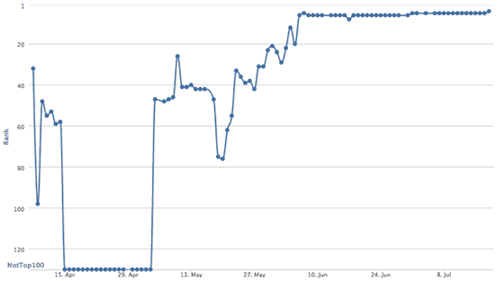
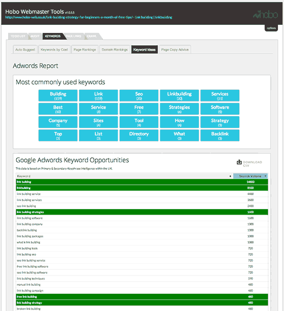
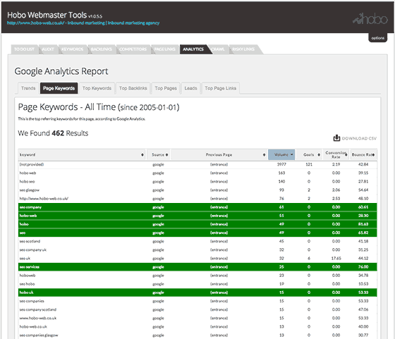
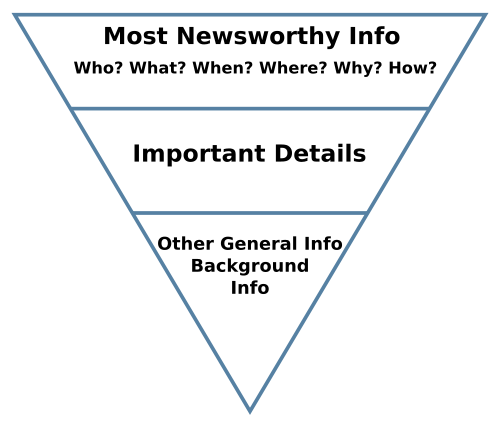
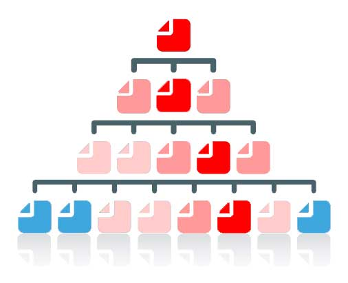
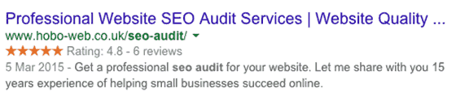
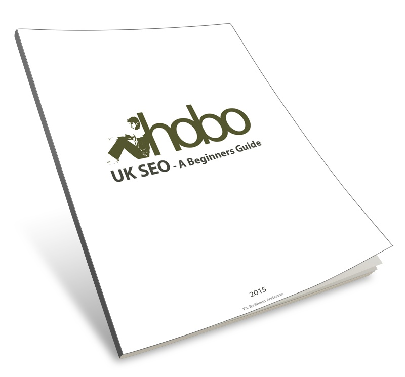
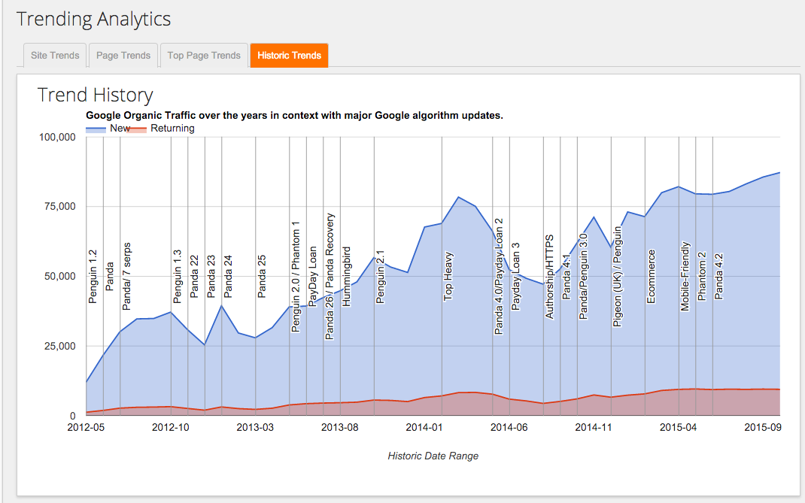

What is SEO?
Search Engine Optimisation in 2016 is a technical, analytical and creative process to improve the visibility of a website in search engines, with the aim of driving more potential customers to it.
These free SEO tips will help you create a successful SEO friendly website yourself, based on my 15 years experience making websites rank in Google. If you need optimisation services – see my SEO audit or small business seo services.
An Introduction
This is a beginner’s guide to effective white hat SEO. I deliberately steer clear of techniques that might be ‘grey hat’, as what is grey today is often ‘black hat’ tomorrow, as far as Google is concerned.
No one-page guide can explore this complex topic in full. What you’ll read here are answers to questions I had when I was starting out in this field.
The ‘Rules.’
Google insists webmasters adhere to their ‘rules’ and aims to reward sites with high-quality content and remarkable ‘white hat’ web marketing techniques with high rankings.
Conversely, it also needs to penalise websites that manage to rank in Google by breaking these rules.
These rules are not ‘laws’, but ‘guidelines’, for ranking in Google; lay down by Google. You should note, however, that some methods of ranking in Google are, in fact, illegal. Hacking, for instance, is illegal in the UK and US.
You can choose to follow and abide by these rules, bend them or ignore them – all with different levels of success (and levels of retribution, from Google’s web spam team).
White hats do it by the ‘rules’; black hats ignore the ‘rules’.
What you read in this article is perfectly within the laws and also within the guidelines and will help you increase the traffic to your website through organic, or natural search engine results pages (SERPs).
Definition
There are a lot of definitions of SEO (spelled Search engine optimisation in the UK, Australia and New Zealand, or search engine optimization in the United States and Canada) but organic SEO in 2016 is mostly about getting free traffic from Google, the most popular search engine in the world (and almost the only game in town in the UK):

Opportunity
The art of web SEO lies in understanding how people search for things and understanding what type of results Google wants to (or will) display to its users. It’s about putting a lot of things together to look for opportunity.
A good optimiser has an understanding of how search engines like Google generate their natural SERPs to satisfy users’ navigational, informational and transactional keyword queries.
Risk Management
A good search engine marketer has a good understanding of the short term and long term risks involved in optimising rankings in search engines, and an understanding of the type of content and sites Google (especially) WANTS to return in its natural SERPs.
The aim of any campaign is more visibility in search engines and this would be a simple process if it were not for the many pitfalls.
There are rules to be followed or ignored, risks to take, gains to make, and battles to be won or lost.
Free Traffic
A Mountain View spokesman once called the search engine ‘kingmakers‘, and that’s no lie.
Ranking high in Google is VERY VALUABLE – it’s effectively ‘free advertising’ on the best advertising space in the world.
Traffic from Google natural listings is STILL the most valuable organic traffic to a website in the world, and it can make or break an online business.
The state of play, in 2016, is that you can STILL generate highly targeted leads, for FREE, just by improving your website and optimising your content to be as relevant as possible for a customer looking for your company, product or service.
As you can imagine, there’s a LOT of competition now for that free traffic – even from Google (!) in some niches.
You shouldn’t compete with Google. You should focus on competing with your competitors.
The Process
The process can be practised, successfully, in a bedroom or a workplace, but it has traditionally always involved mastering many skills as they arose including diverse marketing technologies including but not limited to:
- Website design
- Accessibility
- Usability
- User experience
- Website development
- PHP, HTML, CSS, etc.
- Server management
- Domain management
- Copywriting
- Spreadsheets
- Backlink analysis
- Keyword research
- Social media promotion
- Software development
- Analytics and data analysis
- Information architecture
- Research
- Looking at Google for hours on end
It takes a lot, in 2016, to rank on merit a page in Google in competitive niches.
User Experience
The big stick Google is hitting every webmaster with (at the moment, and for the foreseeable future) is the ‘QUALITY USER EXPERIENCE‘ stick.
If you expect to rank in Google in 2016, you’d better have a quality offering, not based entirely on manipulation, or old school tactics.
Is a visit to your site a good user experience?
If not – beware manual ‘Quality Raters’ and beware the Google Panda/Site Quality algorithms that are looking for low-quality content and other issues that Google classifies as a poor user experience for its users.
Google raising the ‘quality bar’, year on year, ensures a higher level of quality in online marketing in general (above the very low-quality we’ve seen over the last years).
Success online involves investment in higher quality on-page content, website architecture, usability, conversion to optimisation balance, and promotion.
If you don’t take that route, you’ll find yourself chased down by Google’s algorithms at some point in the coming year.
This ‘what is SEO‘ guide (and this entire website) is not about churn and burn type of Google SEO (called webspam to Google) as that is too risky to deploy on a real business website in 2016.
What Is A Successful Strategy?
Get relevant. Get trusted. Get Popular.
It is no longer just about manipulation in 2016.
It’s about adding quality and often useful content to your website that together meet a PURPOSE that delivers USER SATISFACTION.
If you are serious about getting more free traffic from search engines, get ready to invest time and effort in your website and online marketing.
Quality Signals
Google wants to rank QUALITY documents in its results, and force those who wish to rank high to invest in higher-quality content or great service that attracts editorial links from reputable websites.
If you’re willing to add a lot of great content to your website, and create buzz about your company, Google will rank you high.
If you try to manipulate Google, it will penalise you for a period, and often until you fix the offending issue – which we know can LAST YEARS.
Backlinks in general, for instance, are STILL weighed FAR too positively by Google and they are manipulated to drive a site to the top positions – for a while. That’s why blackhats do it – and they have the business model to do it. It’s the easiest way to rank a site, still today.
If you are a real business who intends to build a brand online – you can’t use black hat methods. Full stop.
If you have been penalised by Google, fixing the problems will not necessarily bring organic traffic back as it was.
Recovery from a Google penalty is a ‘growth’ process as much as it is a ‘clean-up’ process.
Google Rankings Are In Constant Ever-Flux
It’s Google’s job to MAKE MANIPULATING SERPs HARD.
So – the people behind the algorithms keep ‘moving the goalposts’, modifying the ‘rules’ and raising ‘quality standards’ for pages that compete for top ten rankings.
In 2016 – we have ever-flux in the SERPs – and that seems to suit Google and keep everybody guessing.
Google is very secretive about its ‘secret sauce’ and offers sometimes helpful and sometimes vague advice – and some say offers misdirection – about how to get more from valuable traffic from Google.
Google is on record as saying the engine is intent on ‘frustrating’ search engine optimisers attempts to improve the amount of high-quality traffic to a website – at least (but not limited to) – using low-quality strategies classed as web spam.
At its core, Google search engine optimisation is still about KEYWORDS and LINKS. It’s about RELEVANCE, REPUTATION and TRUST. It is about QUALITY OF CONTENT & VISITOR SATISFACTION.
A Good USER EXPERIENCE is a key to winning – and keeping – the highest rankings in many verticals.
Relevance, Authority & Trust
Web page optimisation is about making a web page being relevant enough for a query, and being trusted enough to rank for it.
It’s about ranking for valuable keywords for the long term, on merit. You can play by ‘white hat’ rules lay down by Google, and aim to build this Authority and Trust naturally, over time, or you can choose to ignore the rules and go full time ‘black hat’.
MOST SEO tactics still work, for some time, on some level, depending on who’s doing them, and how the campaign is deployed.
Whichever route you take, know that if Google catches you trying to modify your rank using overtly obvious and manipulative methods, then they will class you a web spammer, and your site will be penalised ( you will not rank high for relevant keywords).
These penalties can last years if not addressed, as some penalties expire and some do not – and Google wants you to clean up any violations.
Google does not want you to try and modify where you rank, easily. Critics would say Google would prefer you paid them to do that using Google Adwords.
The problem for Google is – ranking high in Google organic listings is a real social proof for a business, a way to avoid PPC costs and still, simply, the BEST WAY to drive VALUABLE traffic to a site.
It’s FREE, too, once you’ve met the always-increasing criteria it takes to rank top.
Google Penalties
In 2016, you need to be aware that what works to improve your rank can also get you penalised (faster, and a lot more noticeably).
In particular, the Google web spam team is currently waging a PR war on sites that rely on unnatural links and other ‘manipulative’ tactics (and handing out severe penalties if it detects them). And that’s on top of many algorithms already designed to look for other manipulative tactics (like keyword stuffing or boilerplate text across pages).
Google is making sure it takes longer to see results from black and white hat SEO, and intent on ensuring a flux in its SERPs based largely on where the searcher is in the world at the time of the search, and where the business is located near to that searcher.
There are some things you cannot directly influence legitimately to improve your rankings, but there is plenty you CAN do to drive more Google traffic to a web page.
Ranking Factors
Google has HUNDREDS of ranking factors with signals that can change daily, weekly, monthly or yearly to help it work out where your page ranks in comparison to other competing pages in SERPs.
You will not ever find every ranking factor. Many ranking factors are on-page or on-site and others are off-page or off-site. Some ranking factors are based on where you are, or what you have searched for before.
I’ve been in online marketing for 15 years. In that time, a lot has changed. I’ve learned to focus on aspects that offer the greatest return on investment of your labour.
Learn SEO Basics….
Here are few simple SEO tips to begin with:
- If you are just starting out, don’t think you can fool Google about everything all the time. Google has VERY probably seen your tactics before. So, it’s best to keep your plan simple. GET RELEVANT. GET REPUTABLE. Aim for a good, satisfying visitor experience. If you are just starting out – you may as well learn how to do it within Google’s Webmaster Guidelines first. Make a decision, early, if you are going to follow Google’s guidelines, or not, and stick to it. Don’t be caught in the middle with an important project. Do not always follow the herd.
- If your aim is to deceive visitors from Google, in any way, Google is not your friend. Google is hardly your friend at any rate – but you don’t want it as your enemy. Google will send you lots of free traffic though if you manage to get to the top of search results, so perhaps they are not all that bad.
- A lot of optimisation techniques that are effective in boosting sites rankings in Google are against Google’s guidelines. For example many links that may have once promoted you to the top of Google, may, in fact, today be hurting your site and its ability to rank high in Google. Keyword stuffing might be holding your page back…. You must be smart, and cautious, when it comes to building links to your site in a manner that Google *hopefully* won’t have too much trouble with, in the FUTURE. Because they will punish you in the future.
- Don’t expect to rank number 1 in any niche for a competitive without a lot of investment, work. Don’t expect results overnight. Expecting too much too fast might get you in trouble with the spam team.
- You don’t pay anything to get into Google, Yahoo or Bing natural, or free listings. It’s common for the major search engines to find your website pretty easily by themselves within a few days. This is made so much easier if your website actually ‘pings’ search engines when you update content (via XML sitemaps or RSS for instance).
- To be listed and rank high in Google and other search engines, you really should consider and largely abide by search engine rules and official guidelines for inclusion. With experience and a lot of observation, you can learn which rules can be bent, and which tactics are short term and perhaps, should be avoided.
- Google ranks websites (relevancy aside for a moment) by the number and quality of incoming links to a site from other websites (amongst hundreds of other metrics). Generally speaking, a link from a page to another page is viewed in Google “eyes” as a vote for that page the link points to. The more votes a page gets, the more trusted a page can become, and the higher Google will rank it – in theory. Rankings are HUGELY affected by how much Google ultimately trusts the DOMAIN the page is on. BACKLINKS (links from other websites – trump every other signal.)
- I’ve always thought if you are serious about ranking – do so with ORIGINAL COPY. It’s clear – search engines reward good content it hasn’t found before. It indexes it blisteringly fast, for a start (within a second, if your website isn’t penalised!). So – make sure each of your pages has enough text content you have written specifically for that page – and you won’t need to jump through hoops to get it ranking.
- If you have original, quality content on a site, you also have a chance of generating inbound quality links (IBL). If your content is found on other websites, you will find it hard to get links, and it probably will not rank very well as Google favours diversity in its results. If you have decent original content on your site, you can then let authority websites – those with online business authority – know about it, and they might link to you – this is called a quality backlink.
- Search engines need to understand a link is a link. Links can be designed to be ignored by search engines with the rel nofollow attribute.
- Search engines can also find your site by other websites linking to it. You can also submit your site to search engines direct, but I haven’t submitted any site to a search engine in the last ten years – you probably don’t need to do that. If you have a new site, I would immediately register it with Google Webmaster Tools these days.
- Google and Bing use a crawler (Googlebot and Bingbot) that spiders the web looking for new links to find. These bots might find a link to your homepage somewhere on the web and then crawl and index the pages of your site if all your pages are linked together. If your website has an XML sitemap, for instance, Google will use that to include that content in its index. An XML sitemap is INCLUSIVE, not EXCLUSIVE. Google will crawl and index every single page on your site – even pages out with an XML sitemap.
- Many think Google will not allow new websites to rank well for competitive terms until the web address “ages” and acquires “trust” in Google – I think this depends on the quality of the incoming links. Sometimes your site will rank high for a while then disappears for months. A “honeymoon period” to give you a taste of Google traffic, no doubt.
- Google WILL classify your site when it crawls and indexes your site – and this classification can have a DRASTIC effect on your rankings – it’s important for Google to work out WHAT YOUR ULTIMATE INTENT IS – do you want to be classified as an affiliate site made ‘just for Google’, a domain holding page or a small business website with a real purpose? Ensure you don’t confuse Google by being explicit with all the signals you can – to show on your website you are a real business, and your INTENT is genuine – and even more importantly today – FOCUSED ON SATISFYING A VISITOR.
- NOTE – If a page exists only to make money from Google’s free traffic – Google calls this spam. I go into this more, later in this guide.
- The transparency you provide on your website in text and links about who you are, what you do, and how you’re rated on the web or as a business is one way that Google could use (algorithmically and manually) to ‘rate’ your website. Note that Google has a HUGE army of quality raters and at some point they will be on your site if you get a lot of traffic from Google.
- To rank for specific keyword phrase searches, you usually need to have the keyword phrase or highly relevant words on your page (not necessarily all together, but it helps) or in links pointing to your page/site.
- Ultimately what you need to do to compete is largely dependent on what the competition for the term you are targeting is doing. You’ll need to at least mirror how hard they are competing if a better opportunity is hard to spot.
- As a result of other quality sites linking to your site, the site now has a certain amount of real PageRank that is shared with all the internal pages that make up your website that will in future help provide a signal to where this page ranks in the future.
- Yes, you need to build links to your site to acquire more PageRank, or Google ‘juice’ – or what we now call domain authority or trust. Google is a link-based search engine – it does not quite understand ‘good’ or ‘quality’ content – but it does understand ‘popular’ content. It can also usually identify poor, or THIN CONTENT – and it penalises your site for that – or – at least – it takes away the traffic you once had with an algorithm change. Google doesn’t like calling actions the take a ‘penalty’ – it doesn’t look good. They blame your ranking drops on their engineers getting better at identifying quality content or links, or the inverse – low-quality content and unnatural links. If they do take action your site for paid links – they call this a ‘Manual Action’ and you will get notified about it in Webmaster Tools if you sign up.
- Link building is not JUST a numbers game, though. One link from a “trusted authority” site in Google could be all you need to rank high in your niche. Of course, the more “trusted” links you attract, the more Google will trust your site. It is evident you need MULTIPLE trusted links from MULTIPLE trusted websites to get the most from Google in 2016.
- Try and get links within page text pointing to your site with relevant, or at least, natural looking, keywords in the text link – not, for instance, in blogrolls or site-wide links. Try to ensure the links are not obviously “machine generated” e.g. site-wide links on forums or directories. Get links from pages, that in turn, have a lot of links to them, and you will soon see benefits.
- Onsite, consider linking to your other pages by linking to them within text. I usually only do this when it is relevant – often, I’ll link to relevant pages when the keyword is in the title elements of both pages. I don’t go in for auto-generating links at all. Google has penalised sites for using particular auto link plugins, for instance, so I avoid them.
- Linking to a page with actual key-phrases in the link help a great deal in all search engines when you want to feature for specific key terms. For example; “SEO Scotland” as opposed to http://www.hobo-web.co.uk or “click here“. Saying that – in 2016, Google is punishing manipulative anchor text very aggressively, so be sensible – and stick to brand mentions and plain URL links that build authority with less risk. I rarely ever optimise for grammatically incorrect terms these days (especially with links).
- I think the anchor text links in internal navigation is still valuable – but keep it natural. Google needs links to find and help categorise your pages. Don’t underestimate the value of a clever internal link keyword-rich architecture and be sure to understand for instance how many words Google counts in a link, but don’t overdo it. Too many links on a page could be seen as a poor user experience. Avoid lots of hidden links in your template navigation.
- Search engines like Google ‘spider’ or ‘crawl’ your entire site by following all the links on your site to new pages, much as a human would click on the links of your pages. Google will crawl and index your pages, and within a few days normally, begin to return your pages in SERPs.
- After a while, Google will know about your pages, and keep the ones it deems ‘useful’ – pages with original content, or pages with a lot of links to them. The rest will be de-indexed. Be careful – too many low-quality pages on your site will impact your overall site performance in Google. Google is on record talking about good and bad ratios of quality content to low-quality content.
- Ideally, you will have unique pages, with unique page titles and unique page descriptions . Google does not seem to use the meta description when ranking your page for specific keyword searches if not relevant and unless you are careful if you might end up just giving spammers free original text for their site and not yours once they scrape your descriptions and put the text in main content on their site. I don’t worry about meta keywords these days as Google and Bing say they either ignore them or use them as spam signals.
- Google will take some time to analyse your entire site, examining text content and links. This process is taking longer and longer these days but is ultimately determined by your domain reputation and real PageRank.
- If you have a lot of duplicate low-quality text already found by Googlebot on other websites it knows about; Google will ignore your page. If your site or page has spammy signals, Google will penalise it, sooner or later. If you have lots of these pages on your site – Google will ignore most of your website.
- You don’t need to keyword stuff your text to beat the competition.
- You optimise a page for more traffic by increasing the frequency of the desired key phrase, related key terms, co-occurring keywords and synonyms in links, page titles and text content. There is no ideal amount of text – no magic keyword density. Keyword stuffing is a tricky business, too, these days.
- I prefer to make sure I have as many UNIQUE relevant words on the page that make up as many relevant long tail queries as possible.
- If you link out to irrelevant sites, Google may ignore the page, too – but again, it depends on the site in question. Who you link to, or HOW you link to, REALLY DOES MATTER – I expect Google to use your linking practices as a potential means by which to classify your site. Affiliate sites, for example, don’t do well in Google these days without some good quality backlinks and higher quality pages.
- Many search engine marketers think who you link out to (and who links to you) helps determine a topical community of sites in any field or a hub of authority. Quite simply, you want to be in that hub, at the centre if possible (however unlikely), but at least in it. I like to think of this one as a good thing to remember in the future as search engines get even better at determining topical relevancy of pages, but I have never really seen any granular ranking benefit (for the page in question) from linking out.
- I’ve got by, by thinking external links to other sites should probably be on single pages deeper in your site architecture, with the pages receiving all your Google Juice once it’s been “soaked up” by the higher pages in your site structure (the home page, your category pages). This tactic is old school but I still follow it. I don’t need to think you need to worry about that, too much, in 2016.
- Original content is king and will attract a “natural link growth” – in Google’s opinion. Too many incoming links too fast might devalue your site, but again. I usually err on the safe side – I always aimed for massive diversity in my links – to make them look ‘more natural’. Honestly, I go for natural links in 2016 full stop, for this website.
- Google can devalue whole sites, individual pages, template generated links and individual links if Google deems them “unnecessary” and a ‘poor user experience’.
- Google knows who links to you, the “quality” of those links, and whom you link to. These – and other factors – help ultimately determine where a page on your site ranks. To make it more confusing – the page that ranks on your site might not be the page you want to rank, or even the page that determines your rankings for this term. Once Google has worked out your domain authority – sometimes it seems that the most relevant page on your site Google HAS NO ISSUE with will rank.
- Google decides which pages on your site are important or most relevant. You can help Google by linking to your important pages and ensuring at least one page is well optimised amongst the rest of your pages for your desired key phrase. Always remember Google does not want to rank ‘thin’ pages in results – any page you want to rank – should have all the things Google is looking for. That’s a lot these days!
- It is important you spread all that real ‘PageRank’ – or link equity – to your sales keyword / phrase rich sales pages, and as much remains to the rest of the site pages, so Google does not ‘demote’ pages into oblivion – or ‘supplemental results’ as we old timers knew them back in the day. Again – this is slightly old school – but it gets me by, even today.
- Consider linking to important pages on your site from your home page, and other important pages on your site.
- Focus on RELEVANCE first. Then, focus your marketing efforts and get REPUTABLE. This is the key to ranking ‘legitimately’ in Google in 2016.
- Every few months Google changes its algorithm to punish sloppy optimisation or industrial manipulation. Google Panda and Google Penguin are two such updates, but the important thing is to understand Google changes its algorithms constantly to control its listings pages (over 600 changes a year we are told).
- The art of rank modification is to rank without tripping these algorithms or getting flagged by a human reviewer – and that is tricky!
- Focus on improving website download speeds at all times. The web is changing very fast, and a fast website is a good user experience.
Welcome to the tightrope that is modern web optimisation.
Read on if you would like to learn how to SEO….
Keyword Research is ESSENTIAL
The first step in any professional campaign is to do some keyword research and analysis.

Somebody asked me about this a simple white hat tactic and I think what is probably the simplest thing anyone can do that guarantees results.
The chart above (from last year) illustrates a reasonably valuable 4-word term I noticed a page I had didn’t rank high in Google for, but I thought probably should and could rank for, with this simple technique.
I thought it as simple as an example to illustrate an aspect of onpage SEO or ‘rank modification’, that’s white hat, 100% Google friendly and never, ever going to cause you a problem with Google.
This ‘trick’ works with any keyword phrase, on any site, with obvious differing results based on availability of competing pages in SERPs, and availability of content on your site.
The keyword phrase I am testing rankings for isn’t ON the page, and I did NOT add the key phrase…. or in incoming links, or using any technical tricks like redirects or any hidden technique, but as you can see from the chart, rankings seem to be going in the right direction.
You can profit from it if you know a little about how Google works (or seems to work, in many observations, over years, excluding when Google throws you a bone on synonyms. You can’t ever be 100% certain you know how Google works on any level, unless it’s data showing you’re wrong, of course.)
What did I do to rank number 1 from nowhere for that key phrase?
I added one keyword to the page in plain text because adding the actual ‘keyword phrase’ itself would have made my text read a bit keyword stuffed for other variations of the main term. It gets interesting if you do that to a lot of pages, and a lot of keyword phrases. The important thing is keyword research – and knowing which unique keywords to add.
This illustrates a key to ‘relevance’ is…. a keyword.
The right keyword.
Yes – plenty of other things can be happening at the same time. It’s hard to identify EXACTLY why Google ranks pages all the time…but you can COUNT on other things happening and just get on with what you can see works for you.
In a time of light optimisation, it’s useful to EARN a few terms you SHOULD rank for in simple ways that leave others wondering how you got it.
Of course, you can still keyword stuff a page, or still spam your link profile – but it is ‘light’ optimisation I am genuinely interested in testing on this site – how to get more with less – I think that’s the key to not tripping Google’s aggressive algorithms.
There are many tools on the web to help with basic keyword research (including the Google Keyword Planner tool and there are even more useful third party SEO tools to help you do this).
You can use many keyword research tools to identify quickly opportunities to get more traffic to a page:

Google Analytics Keyword ‘Not Provided’
Google Analytics was the very best place to look at keyword opportunity for some (especially older) sites, but that all changed a few years back.
Google stopped telling us which keywords are sending traffic to our sites from the search engine back in October 2011, as part of privacy concerns for its users.
Google will now begin encrypting searches that people do by default, if they are logged into Google.com already through a secure connection. The change to SSL search also means that sites people visit after clicking on results at Google will no longer receive “referrer” data that reveals what those people searched for, except in the case of ads.
Google Analytics now instead displays – keyword “not provided“, instead.
In Google’s new system, referrer data will be blocked. This means site owners will begin to lose valuable data that they depend on, to understand how their sites are found through Google. They’ll still be able to tell that someone came from a Google search. They won’t, however, know what that search was. SearchEngineLand
You can still get some of this data if you sign up for Google Webmaster Tools (and you can combine this in Google Analytics) but the data even there is limited and often not entirely the most accurate. The keyword data can be useful, though – and access to backlink data is essential these days.
If the website you are working on is an aged site – there’s probably a wealth of keyword data in Google Analytics:

This is another example of Google making ranking in organic listings HARDER – a change for ‘users’ that seems to have the most impact on ‘marketers’ outside of Google’s ecosystem – yes – search engine optimisers.
Now, consultants need to be page-centric (abstract, I know), instead of just keyword centric when optimising a web page for Google. There are now plenty of third party tools that help when researching keywords but most of us miss the kind of keyword intelligence we used to have access to.
Proper keyword research is important because getting a site to the top of Google eventually comes down to your text content on a page and keywords in external & internal links. Altogether, Google uses these signals to determine where you rank if you rank at all.
There’s no magic bullet, to this.
At any one time, your site is probably feeling the influence of some algorithmic filter (for example, Google Panda or Google Penguin) designed to keep spam sites under control and deliver relevant, high-quality results to human visitors.
One filter may be kicking in keeping a page down in the SERPs while another filter is pushing another page up. You might have poor content but excellent incoming links, or vice versa. You might have very good content, but a very poor technical organisation of it.
Try and identify the reasons Google doesn’t ‘rate’ a particular page higher than the competition – the answer is usually on the page or in backlinks pointing to the page.
- Do you have too few quality inbound links?
- Do you have too many low quality backlinks?
- Does your page lack descriptive keyword rich text?
- Are you keyword stuffing your text?
- Do you link out to unrelated sites?
- Do you have too many advertisements above the fold?
- Do you have affiliate links on every page of your site, and text found on other websites?
- Do you have broken links and missing images on the page?
Whatever they are, identify issues and fix them.
Get on the wrong side of Google and your site might well be selected for MANUAL review – so optimise your site as if, one day, you will get that website review from a Google Web Spam reviewer.
The key to a successful campaign, I think, is persuading Google that your page is most relevant to any given search query. You do this by good unique keyword rich text content and getting “quality” links to that page.
The latter is far easier to say these days than actually do!
Next time you are developing a page, consider what looks spammy to you is probably spammy to Google. Ask yourself which pages on your site are really necessary. Which links are necessary? Which pages on the site are emphasised in the site architecture? Which pages would you ignore?
You can help a site along in any number of ways (including making sure your page titles and meta tags are unique) but be careful. Obvious evidence of ‘rank modifying’ is dangerous.
I prefer simple SEO techniques and ones that can be measured in some way. I have never just wanted to rank for competitive terms; I have always wanted to understand at least some of the reasons why a page ranked for these key phrases. I try to create a good user experience for humans AND search engines. If you make high-quality text content relevant and suitable for both these audiences, you’ll more than likely find success in organic listings and you might not ever need to get into the technical side of things, like redirects and search engine friendly URLs.
To beat the competition in an industry where it’s difficult to attract quality links, you have to get more “technical” sometimes – and in some industries – you’ve traditionally needed to be 100% black hat to even get in the top 100 results of competitive, transactional searches.
There are no hard and fast rules to long term ranking success, other than developing quality websites with quality content and quality links pointing to it. The less domain authority you have, the more text you’re going to need. The aim is to build a satisfying website and build real authority!
You need to mix it up and learn from experience. Make mistakes and learn from them by observation. I’ve found getting penalised is a very good way to learn what not to do.
Remember there are exceptions to nearly every rule, and in an ever fluctuating landscape, and you probably have little chance determining exactly why you rank in search engines these days. I’ve been doing it for over 15 years and every day I’m trying to better understand Google, to learn more and learn from others’ experiences.
It’s important not to obsess about granular ranking specifics that have little return on your investment unless you really have the time to do so! THERE IS USUALLY SOMETHING MORE VALUABLE TO SPEND THAT TIME ON.
That’s usually either good backlinks or great content.
Fundamentals
The fundamentals of successful optimisation while refined have not changed much over the years – although Google does seem a LOT better than it was at rewarding pages with some reputation signals and satisfying content / usability.
Google isn’t lying about rewarding legitimate effort – despite what some claim. If they were, I would be a black hat full time. So would everybody else trying to rank in Google.
The majority of small to medium businesses do not need advanced strategies because their direct competition has not employed these tactics either.
I took a medium sized business to the top of Google recently for very competitive terms doing nothing but ensuring page titles were optimised, the home page text was re-written, one or two earned links from trusted sites.
This site was a couple of years old, a clean record in Google, and a couple of organic links already from trusted sites.
This domain had the authority and capability to rank for some valuable terms, and all we had to do was to make a few changes on the site, improve the depth and focus of website content, monitor keyword performance and tweak page titles.
There was a little duplicate content needing sorting out and a bit of canonicalisation of thin content to resolve, but none of the measures I implemented I’d call advanced.
A lot of businesses can get more converting visitors from Google simply by following basic principles and best practices:
- Always making sure that every page in the site links out to at least one other page in the site
- Link to your important pages often
- Link not only from your navigation, but from keyword rich text links in text content – keep this natural and for visitors
- Try to keep each page element and content unique as possible
- Build a site for visitors to get visitors and you just might convert some to actual sales too
- Create keyword considered content on the site people will link to
- Watch which sites you link to and from what pages, but do link out!
- Go and find some places on relatively trusted sites to try and get some anchor text rich inbound links
- Monitor trends, check stats
- Minimise duplicate or thin content
- Bend a rule or two without breaking them and you’ll probably be ok
Once this is complete it’s time to … add more, and better content to your site and tell more people about it, if you want more Google love.
OK, so you might have to implement the odd 301, but again, it’s hardly advanced.
I’ve seen simple SEO marketing techniques working for years.
You are better off doing simple stuff better and faster than worrying about some of the more ‘advanced’ techniques you read on some blogs I think – it’s more productive, cost effective for businesses and safer, for most.
Beware Pseudoscience
Pseudoscience is a claim, belief, or practice posing as science, but which does not constitute or adhere to an appropriate scientific methodology…
Beware folk trying to bamboozle you with science. This isn’t a science when Google controls the ‘laws’ and changes them at will.
You see I have always thought that optimisation was about:
- Looking at Google rankings all night long,
- Keyword research
- Observations about ranking performance of your pages and that of others (though not in a controlled environment)
- Putting relevant, co-occurring words you want to rank for on pages
- Putting words in links to pages you want to rank for
- Understanding what you put in your title, that’s what you are going to rank best for
- Getting links from other websites pointing to yours
- Getting real quality links that will last from sites that are pretty trustworthy
- Publishing lots and lots of content
- Focusing on the long tail of search!!!
- Understanding it will take time to beat all this competition
I always expected to get a site demoted, by:
- Getting too many links with the same anchor text pointing to a page
- Keyword stuffing a page
- Trying to manipulate Google too much on a site
- Creating a “frustrating user experience.”
- Chasing the algorithm too much
- Getting links I shouldn’t have
- Buying links
Not that any of the above is automatically penalised all the time.
I was always of the mind I don’t need to understand the maths or science of Google, that much, to understand what Google engineers want.
The biggest challenge these days are to get trusted sites to link to you, but the rewards are worth it.
To do it, you probably should be investing in some marketable content, or compelling benefits for the linking party (that’s not just paying for links somebody else can pay more for). Buying links to improve rankings WORKS but it is probably THE most hated link building technique as far as the Google web spam team is concerned.
I was very curious about the science of optimisation I studied what I could but it left me a little unsatisfied. I learned that building links, creating lots of decent content and learning how to monetise that content better (while not breaking any major TOS of Google) would have been a more worthwhile use of my time.
Getting better and faster at doing all that would be nice too.
There are many problems with blogs, too, including mine.
Misinformation is an obvious one. Rarely are your results conclusive or observations 100% accurate. Even if you think a theory holds water on some level. I try to update old posts with new information if I think the page is only valuable with accurate data.
Just remember most of what you read about how Google works from a third party is OPINION and just like in every other sphere of knowledge, ‘facts’ can change with a greater understanding over time or with a different perspective.
Chasing The Algorithm
There is no magic bullet and there are no secret formulas to achieve fast number 1 ranking in Google in any competitive niche WITHOUT spamming Google.
A legitimately earned high position in search engines takes a lot of hard work.
There are a few less talked about tricks and tactics that are deployed by some better than others to combat Google Panda, for instance, but there are no big secrets (no “white hat” secrets anyway). There is clever strategy, though, and creative solutions to be found to exploit opportunities uncovered by researching the niche. As soon as Google sees a strategy that gets results… it usually becomes ‘out with the guidelines’ and something you can be penalised for – so beware jumping on the latest fad.
The biggest advantage any one provider has over another is experience and resource. The knowledge of what doesn’t work and what will hurt your site is often more valuable than knowing what will give you a short-lived boost. Getting to the top of Google is a relatively simple process. One that is constantly in change. Professional SEO is more a collection of skills, methods and techniques. It is more a way of doing things, than a one-size-fits-all magic trick.
After over a decade practising and deploying real campaigns, I’m still trying to get it down to its simplest, most cost-effective processes.
I think it’s about doing simple stuff right.
Good text, simple navigation structure, quality links. To be relevant and reputable takes time, effort and luck, just like anything else in the real world, and that is the way Google want it.
If a company is promising you guaranteed rankings and has a magic bullet strategy, watch out.
I’d check it didn’t contravene Google’s guidelines.
How long does it take to see results?
Some results can be gained within weeks and you need to expect some strategies to take months to see the benefit. Google WANTS these efforts to take time. Critics of the search engine giant would point to Google wanting fast effective rankings to be a feature of Googles own Adwords sponsored listings.
Optimisation is not a quick process, and a successful campaign can be judged on months if not years. Most successful, fast ranking website optimisation techniques end up finding their way into Google Webmaster Guidelines – so be wary.
It takes time to build quality, and it’s this quality that Google aims to reward in 2016.
It takes time to generate the data needed to begin to formulate a campaign, and time to deploy that campaign. Progress also depends on many factors
- How old is your site compared to the top 10 sites?
- How many back-links do you have compared to them?
- How is their quality of back-links compared to yours?
- What the history of people linking to you (what words have people been using to link to your site?)
- How good of a resource is your site?
- Can your site attract natural back-links (e.g. you have good content or a great service) or are you 100% relying on your agency for back-links (which is very risky in 2016)?
- How much unique content do you have?
- Do you have to pay everyone to link to you (which is risky), or do you have a “natural” reason people might link to you?
Google wants to return quality pages in its organic listings, and it takes time to build this quality and for that quality to be recognised.
It takes time too to balance your content, generate quality backlinks and manage your disavowed links.
Google knows how valuable organic traffic is – and they want webmasters investing a LOT of effort in ranking pages.
Critics will point out the higher the cost of expert SEO, the better-looking Adwords becomes, but Adwords will only get more expensive, too. At some point, if you want to compete online, your going to HAVE to build a quality website, with a unique offering to satisfy returning visitors – the sooner you start, the sooner you’ll start to see results.
If you start NOW and are determined to build an online brand, a website rich in content with a satisfying user experience – Google will reward you in organic listings.
ROI
Web optimisation is a marketing channel just like any other and there are no guarantees of success in any, for what should be obvious reasons. There are no guarantees in Google Adwords either, except that costs to compete will go up, of course.
That’s why it is so attractive – but like all marketing – it is still a gamble.
At the moment, I don’t know you, your business, your website, your resources, your competition or your product. Even with all that knowledge, calculating ROI is extremely difficult because ultimately Google decides on who ranks where in its results – sometimes that’s ranking better sites, and sometimes (often) it is ranking sites breaking the rules above yours.
Nothing is absolute in search marketing.
There are no guarantees – despite claims from some companies. What you make from this investment is dependent on many things, not least, how suited your website is to convert visitors to sales.
Every site is different.
Big Brand campaigns are far, far different from small business SEO campaigns that don’t have any links to begin with, to give you but one example.
It’s certainly easier if the brand in question has a lot of domain authority just waiting to unlocked – but of course, that’s a generalisation as big brands have big brand competition too.
It depends entirely on the quality of the site in question and the level and quality of the competition, but smaller businesses should probably look to own their niche, even if limited to their location, at first.
Local SEO is always a good place to start for small businesses.
Page Title Tag Best Practice
<title>What Is The Best Title Tag For Google?</title>
The page title tag (or HTML Title Element) is arguably the most important on page ranking factor (with regards to web page optimisation). Keywords in page titles can undeniably HELP your pages rank higher in Google results pages (SERPs). The page title is also often used by Google as the title of a search snippet link in search engine results pages.
For me, a perfect title tag in Google is dependant on a number of factors and I will lay down a couple below but I have since expanded page title advice on another page (link below);
- A page title that is highly relevant to the page it refers to will maximise its usability, search engine ranking performance and click through satisfaction rate. It will probably be displayed in a web browser’s window title bar, and in clickable search snippet links used by Google, Bing & other search engines. The title element is the “crown” of a web page with important keyword phrase featuring, AT LEAST, ONCE within it.
- Most modern search engines have traditionally placed a lot of importance in the words contained within this HTML element. A good page title is made up of valuable keyword phrases with clear user intent.
- The last time I looked Google displayed as many characters as it can fit into “a block element that’s 512px wide and doesn’t exceed 1 line of text”. So – THERE BECAME NO AMOUNT OF CHARACTERS any optimiser could lay down as exact best practice to GUARANTEE a title will display, in full in Google, at least, as the search snippet title. Ultimately – only the characters and words you use will determine if your entire page title will be seen in a Google search snippet. Recently Google displayed 70 characters in a title – but that changed in 2011/2012.
- If you want to ENSURE your FULL title tag shows in the desktop UK version of Google SERPs, stick to a shorter title of about 55 characters but that does not mean your title tag MUST end at 55 characters and remember your mobile visitors see a longer title (in the UK, in March 2015 at least). I have seen ‘up-to’ 69 characters (back in 2012) – but as I said – what you see displayed in SERPs depends on the characters you use. In 2016 – I just expect what Google displays to change – so I don’t obsess about what Google is doing in terms of display.
- Google is all about ‘user experience’ and ‘visitor satisfaction’ in 2016 so it’s worth remembering that usability studies have shown that a good page title length is about seven or eight words long and fewer than 64 total characters. Longer titles are less scan able in bookmark lists, and might not display correctly in many browsers (and of course probably will be truncated in SERPs).
- Google will INDEX perhaps 1000s of characters in a title… but I don’t think no one knows exactly how many characters or words Google will count AS a TITLE when determining relevance for ranking purposes. It is a very hard thing to try to isolate accurately with all the testing and obfuscation Google uses to hide its ‘secret sauce‘. I have had ranking success with longer titles – much longer titles. Google certainly reads ALL the words in your page title (unless you are spamming it silly, of course).
- You can probably include up to 12 words that will be counted as part of a page title, and consider using your important keywords in the first eight words. The rest of your page title will be counted as normal text on the page.
- NOTE, in 2016, the HTML title element you choose for your page, may not be what Google chooses to include in your SERP snippet. The search snippet title and description are very much QUERY dependant these days. Google often chooses what it thinks is the most relevant title for your search snippet, and it can use information from your page, or in links to that page, to create a very different SERP snippet title.
- When optimising a title, you are looking to rank for as many terms as possible, without keyword stuffing your title. Often, the best bet is to optimise for a particular phrase (or phrases) – and take a more long-tail approach. Note that too many page titles and not enough actual page text per page could lead to Google Panda or other ‘user experience’ performance issues. A highly relevant unique page title is no longer enough to float a page with thin content. Google cares WAY too much about the page text content these days to let a good title hold up a thin page on most sites.
- Some page titles do better with a call to action – a call to action which reflects exactly a searcher’s intent (e.g. to learn something, or buy something, or hire something. Remember this is your hook in search engines if Google chooses to use your page title in its search snippet, and there are a lot of competing pages out there in 2016.
- The perfect title tag on a page is unique to other pages on the site. In light of Google Panda, an algorithm that looks for a ‘quality’ in sites, you REALLY need to make your page titles UNIQUE, and minimise any duplication, especially on larger sites.
- I like to make sure my keywords feature as early as possible in a title tag but the important thing is to have important keywords and key phrases in your page title tag SOMEWHERE.
- For me, when improved search engine visibility is more important than branding, the company name goes at the end of the tag, and I use a variety of dividers to separate as no one way performs best. If you have a recognisable brand – then there is an argument for putting this at the front of titles – although Google often will change your title dynamically – sometimes putting your brand at the front of your snippet link title itself.
- Note that Google is pretty good these days at removing any special characters you have in your page title – and I would be wary of trying to make your title or Meta Description STAND OUT using special characters. That is not what Google wants, evidently, and they do give you a further chance to make your search snippet stand out with RICH SNIPPETS and SCHEMA mark-up.
- I like to think I write titles for search engines AND humans.
- Know that Google tweaks everything regularly – why not what the perfect title keys off? So MIX it up…
- Don’t obsess. Natural is probably better, and will only get better as engines evolve. I optimise for key-phrases, rather than just keywords.
- I prefer mixed case page titles as I find them more scan able than titles with ALL CAPS or all lowercase.
- Generally speaking, the more domain trust/authority your SITE has in Google, the easier it is for a new page to rank for something. So bear that in mind. There is only so much you can do with your page titles – your websites rankings in Google are a LOT more to do with OFFSITE factors than ONSITE ones – negative and positive.
- Click through rate is something that is likely measured by Google when ranking pages (Bing say they use it too, and they now power Yahoo), so it is worth considering whether you are best optimising your page titles for click-through rate or optimising for more search engine rankings.
- I would imagine keyword stuffing your page titles could be one area Google look at (although I see little evidence of it).
- Remember….think ‘keyword phrase‘ rather than ‘keyword‘, ‘keyword‘,’keyword‘… think Long Tail.
- Google will select the best title it wants for your search snippet – and it will take that information from multiple sources, NOT just your page title element. A small title is often appended with more information about the domain. Sometimes, if Google is confident in the BRAND name, it will replace it with that (often adding it to the beginning of your title with a colon, or sometimes appending the end of your snippet title with the actual domain address the page belongs to).
A Note About Title Tags;
When you write a page title, you have a chance right at the beginning of the page to tell Google (and other search engines) if this is a spam site or a quality site – such as – have you repeated the keyword four times or only once? I think title tags, like everything else, should probably be as simple as possible, with the keyword once and perhaps a related term if possible.
I always aim to keep my HTML page title elements simple and as unique as possible.
I’m certainly cleaning up the way I write my titles all the time.
More Reading:
External Links
- http://www.w3.org/QA/Tips/good-titles.html
- http://moz.com/learn/SEO/title-tag
- http://www.w3schools.com/tags/tag_title.asp
- http://searchengineland.com/writing-HTML-title-tags-humans-google-bing-59384
- http://searchenginewatch.com/sew/news/2054494/title-tag-copywriting-tips-newbie-SEOs
Meta Keywords Best Practice
A hallmark of shady natural search engine optimisation companies – the meta-keywords tag. Companies that waste time and resources on these items waste client’s money – that’s a fact:
<meta name="Keywords" content="s.e.o., search engine optimisation, optimization">
I have one piece of advice with the meta keyword tag, which like the title tag, goes in the head section of your web page, forget about them.
If you are relying on meta-keyword optimisation to rank for terms, your dead in the water. From what I see, Google + Bing ignores meta keywords – or, at least, places no weight in them to rank pages. Yahoo may read them, but really, a search engine optimiser has more important things to worry about than this nonsense.
What about other search engines that use them? Hang on while I submit my site to those 75,000 engines first [sarcasm!]. Yes, ten years ago early search engines liked looking at your meta-keywords. I’ve seen OPs in forums ponder which is the best way to write these tags – with commas, with spaces, limiting to how many characters. Forget about meta-keyword tags – they are a pointless waste of time and bandwidth. Could probably save a rain forest with the bandwidth costs we save if everybody removed their keyword tags.
Tin Foil Hat Time
So you have a new site. You fill your home page meta tags with the 20 keywords you want to rank for – hey, that’s what optimisation is all about, isn’t it? You’ve just told Google by the third line of text what to filter you for. The meta name=”Keywords” was actually originally for words that weren’t actually on the page that would help classify the document.
Sometimes competitors might use the information in your keywords to determine what you are trying to rank for, too….
If everybody removed them and stopped abusing meta keywords, Google would probably start looking at them but that’s the way of things in search engines.
I ignore meta keywords and remove them from pages I work on.
Meta Description Best Practice
Like the title element and unlike the meta keywords tag, this one is important, both from a human and search engine perspective.
<meta name="Description" content="Get your site on the first page of Google, Yahoo and Bing. Call us on 0845 094 0839. A company based in Scotland." />
Forget whether or not to put your keyword in it, make it relevant to a searcher and write it for humans, not search engines. If you want to have this 20-word snippet which accurately describes the page you have optimised for one or two keyword phrases when people use Google to search, make sure the keyword is in there.
I must say, I normally do include the keyword in the description as this usually gets it in your SERP snippet.
Google looks at the description but there is debate whether it uses the description tag to rank sites. I think they might be at some level, but again, a very weak signal. I certainly don’t know of an example that clearly shows a meta description helping a page rank.
Sometimes, I will ask a question with my titles, and answer it in the description, sometimes I will just give a hint;
That is a lot more difficult in 2016 as search snippets change depending on what Google wants to emphasise to its users.
It’s also very important to have unique meta descriptions on every page on your site.
Tin Foil Hat Time
Sometimes I think if your titles are spammy, your keywords are spammy, and your meta description is spammy, Google might stop right there – even they probably will want to save bandwidth at some time. Putting a keyword in the description won’t take a crap site to number 1 or raise you 50 spots in a competitive niche – so why optimise for a search engine when you can optimise for a human? – I think that is much more valuable, especially if you are in the mix already – that is – on page one for your keyword.
So, the meta description tag is important in Google, Yahoo and Bing and every other engine listing – very important to get it right.
Make it for humans.
Oh, and by the way – Google seems to truncate anything over @156 characters in the meta description, although this may be limited by pixel width in 2016.
More Reading:
External Links
Robots Meta Tag
Thus far I’ve theorised about the Title Element, the Meta Description Tag and Meta Keywords Tag. Next:
The Robots Meta Tag;
<meta name="robots" content="index, nofollow" />
I could use the above meta tag to tell Google to index the page but not to follow any links on the page, if for some reason, I did not want the page to appear in Google search results.
By default, Googlebot will index a page and follow links to it. So there’s no need to tag pages with content values of INDEX or FOLLOW. GOOGLE
There are various instructions you can make use of in your Robots Meta Tag, but remember Google by default WILL index and follow links, so you have NO need to include that as a command – you can leave the robots meta out completely – and probably should if you don’t have a clue.
Googlebot understands any combination of lowercase and uppercase. GOOGLE.
Valid values for Robots Meta Tag ”CONTENT” attribute are: “INDEX“, “NOINDEX“, “FOLLOW“, and “NOFOLLOW“.
Examples:
- META NAME=”ROBOTS” CONTENT=”NOINDEX, FOLLOW”
- META NAME=”ROBOTS” CONTENT=”INDEX, NOFOLLOW”
- META NAME=”ROBOTS” CONTENT=”NOINDEX, NOFOLLOW”
- META NAME=”ROBOTS” CONTENT=”NOARCHIVE”
- META NAME=”GOOGLEBOT” CONTENT=”NOSNIPPET”
Google will understand the following and interprets the following robots meta tag values:
- NOINDEX – prevents the page from being included in the index.
- NOFOLLOW – prevents Googlebot from following any links on the page. (Note that this is different from the link-level NOFOLLOW attribute, which prevents Googlebot from following an individual link.)
- NOARCHIVE – prevents a cached copy of this page from being available in the search results.
- NOSNIPPET – prevents a description from appearing below the page in the search results, as well as prevents caching of the page.
- NOODP – blocks the Open Directory Project description of the page from being used in the description that appears below the page in the search results.
- NONE – equivalent to “NOINDEX, NOFOLLOW”.
Robots META Tag Quick Reference
| Terms | Googlebot | Slurp | BingBot | Teoma |
|---|---|---|---|---|
| NoIndex | YES | YES | YES | YES |
| NoFollow | YES | YES | YES | YES |
| NoArchive | YES | YES | YES | YES |
| NoSnippet | YES | NO | NO | NO |
| NoODP | YES | YES | YES | NO |
| NoYDIR | NO | YES | NO | NO |
| NoImageIndex | YES | NO | NO | NO |
| NoTranslate | YES | NO | NO | NO |
| Unavailable_After | YES | NO | NO | NO |
I’ve included the robots meta tag in my tutorial as this IS one of only a few meta tags / HTML head elements I focus on when it comes to managing Googlebot and Bingbot. At a page level – it is a powerful way to control if your pages are returned in search results pages.
These meta tags go in the [HEAD] section of a [HTML] page and represent the only tags for Google I care about. Just about everything else you can put in the [HEAD] of your HTML document is quite unnecessary and maybe even pointless (for Google optimisation, anyway).
If you are interested in using methods like on-page robots instructions and the robots.txt file to control which pages get indexed by Google and how Google treats them, Sebastian knows a lot more than me.
External Links
- http://googlewebmastercentral.blogspot.co.uk/2007/03/using-robots-meta-tag.html
- http://www.robotstxt.org/meta.html
- http://googleblog.blogspot.co.uk/2007/02/robots-exclusion-protocol.html
H1-H6: Headers
I can’t find any definitive proof online that says you need to use Heading Tags (H1, H2, H3, H4, H5, H6) or that they improve rankings in Google, and I have seen pages do well in Google without them – but I do use them, especially the H1 tag on the page.
For me, it’s another piece of a ‘perfect’ page, in the traditional sense, and I try to build a site for Google and humans.
<h1>This is a page title</h1>
I still generally only use one <h1> heading tag in my keyword targeted pages – I believe this is the way the W3C intended it to be used in HTML4 – and I ensure they are at the top of a page above relevant page text and written with my main keywords or related keyword phrases incorporated.
I have never experienced any problems using CSS to control the appearance of the heading tags making them larger or smaller.
You can use multiple H1s in HTML5, but most sites I find I work on still use HTML4.
I use as many H2 – H6 as is necessary depending on the size of the page, but I use H1, H2 & H3. You can see here how to use header tags properly (basically, just be consistent, whatever you do, to give your users the best user experience).
How many words in the H1 Tag? As many as I think is sensible – as short and snappy as possible usually.
I also discovered Google will use your Header tags as page titles at some level if your title element is malformed.
As always be sure to make your heading tags highly relevant to the content on that page and not too spammy, either.
How Many Words & Keywords?

I get asked this all the time –
how much text do you put on a page to rank for a certain keyword?
The answer is there is no optimal amount of text per page, but how much text you’ll ‘need’ will be based on your DOMAIN AUTHORITY, your TOPICAL RELEVANCE and how much COMPETITION there is for that term, and HOW COMPETITIVE that competition is.
Instead of thinking about the quantity of the text, you should think more about the quality of the content on the page. Optimise this with searcher intent in mind. Well, that’s how I do it.
I don’t find that you need a minimum amount of words or text to rank in Google. I have seen pages with 50 words outrank pages with 100, 250, 500 or 1000 words. Then again I have seen pages with no text rank on nothing but inbound links or other ‘strategy’. In 2016, Google is a lot better at hiding away those pages, though.
At the moment, I prefer long form pages with a lot of text although I still rely heavily on keyword analysis to make my pages. The benefits of longer pages are that they are great for long tail key phrases.
Creating deep, information rich pages focuses the mind when it comes to producing authoritative, useful content.
Every site is different. Some pages, for example, can get away with 50 words because of a good link profile and the domain it is hosted on. For me, the important thing is to make a page relevant to a user’s search query.
I don’t care how many words I achieve this with and often I need to experiment on a site I am unfamiliar with. After a while, you get an idea how much text you need to use to get a page on a certain domain into Google.
One thing to note – the more text you add to the page, as long as it is unique, keyword rich and relevant, the more that page will be rewarded with more visitors from Google.
There is no optimal number of words on a page for placement in Google. Every website – every page – is different from what I can see. Don’t worry too much about word count if your content is original and informative. Google will probably reward you on some level – at some point – if there is lots of unique text on all your pages.
TIP: The ‘inverted pyramid‘ – pictured above – is useful when creating pages for the web too – very useful.
Keyword Density?
The short answer to this is – no.
There is no one-size-fits-all keyword density, no optimal percentage guaranteed to rank any page at number 1. However, I do know you can keyword stuff a page and trip a spam filter.
Most web optimisation professionals agree there is no ideal percent of keywords in text to get a page to number 1 in Google. Search engines are not that easy to fool, although the key to success in many fields doing simple things well (or, at least, better than the competition).
I write natural page copy where possible always focused on the key terms – I never calculate density to identify the best % – there are way too many other things to work on. I have looked into this. If it looks natural, it’s ok with me.
Normally I will try and get related terms in the page, and if I have five paragraphs, I might have the keyword in 4 or 5 of those as long as it doesn’t look like I stuffed them in there.
Optimal keyword density is a myth, although there are many who would argue otherwise.
Internal Links To Relevant Pages

I link to relevant internal pages in my site when necessary.
I silo any relevance or trust mainly via links in text content and secondary menu systems and between pages that are relevant in context to one another.
I don’t worry about perfect silo’ing techniques anymore, and don’t worry about whether or not I should link to one category from another as I think the ‘boost’ many proclaim is minimal on the size of sites I usually manage.
I do not obsess about site architecture as much as I used to…. but I always ensure my pages I want to be indexed are all available from a crawl from the home page – and I still emphasise important pages by linking to them where relevant. I always aim to get THE most important exact match anchor text pointing to the page from internal links – but I avoid abusing internals and avoid overtly manipulative internal links that are not grammatically correct, for instance..
There’s no set method I find works for every site, other than to link to related internal pages often without overdoing it and where appropriate.
What Are SERP Sitelinks?
When Google knows enough about the history or relationships of a website (or web page), it will sometimes display what are called site links (or mega site links) under the url of the website in question.
This results in an enhanced search snippet in SERPs.
This is normally triggered when Google is confident this is the site you are looking for, based on the search terms you used.
Sitelinks are usually reserved for navigational queries with a heavy brand bias, a brand name or a company name, for instance, or the website address.
I’ve tracked the evolution of Google site links in organic listings over the years, and they are seemly picked based on a number of factors.
How To Get Google Sitelinks?
Pages that feature in site links are often popular pages on your site, in terms of internal or external links, or user experience or even recent posts that may have been published on your blog.
Google likes to seem to mix this up a lot, perhaps to offer some variety, and probably to obfuscate results to minimise or discourage manipulation.
Sometimes it returns pages that leave me scratching my head as to why Google selected a particular page appears.
If you don’t HAVE site links, have a bit of patience and focus on other areas of your web marketing, like adding more content, get some PR or social activity focussed on the site.
Google WILL give you site links on some terms; ONCE Google is confident your site is the destination users want.
That could be a week or months, but the more popular the site is, the more likely Google will catch up fast.
Sitelinks are not something can be switched on or off, although you can control to some degree the pages are selected as site links. You can do that in Google Webmaster Tools AKA Search Console.
Link Out To Related Sites
Concerning on-page SEO best practices, I usually link out to other quality relevant pages on other websites where possible and where a human would find it valuable.
I don’t link out to other sites from the homepage. I want the Pagerank of the home page to be shared only with my internal pages. I don’t like out to other sites from my category pages either, for the same reason.
I link to other relevant sites (a deep link where possible) from individual pages and I do it often, usually. I don’t worry about link equity or PR leak because I control it on a page-to-page level.
This works for me, it allows me to share the link equity I have with other sites while ensuring it is not at the expense of pages on my domain. It may even help get me into a ‘neighbourhood’ of relevant sites, especially when some of those start linking back to my site.
Linking out to other sites, especially using a blog, also helps tell others that might be interested in your content that your page is ‘here’. Try it.
I don’t abuse anchor text, but I will be considerate, and usually try and link out to a site using keywords these bloggers / site owners would appreciate.
The recently leaked Quality Raters Guidelines document clearly tells web reviewers to identify how USEFUL or helpful your SUPPLEMENTARY NAVIGATION options are – whether you link to other internal pages or pages on other sites.
Redirect Non-WWW To WWW
Your site probably has canonicalisation issues (especially if you have an e-commerce website) and it might start at the domain level.
Simply put, http://www.hobo-web.co.uk/ can be treated by Google as a different URL than http://hobo-web.co.uk/ even though it’s the same page, and it can get even more complicated.
Its thought REAL Pagerank can be diluted if Google gets confused about your URLs and speaking simply you don’t want this PR diluted (in theory).
That’s why many, including myself, redirect non-www to www (or vice versa) if the site is on a Linux/Apache server (in the htaccess file –
Options +FollowSymLinks
RewriteEngine on
RewriteCond %{HTTP_HOST} ^hobo-web.co.uk [NC]
RewriteRule ^(.*)$ http://www.hobo-web.co.uk/$1 [L,R=301]
Basically, you are redirecting all the Google juice to one canonical version of a URL.
In 2016 – this is a MUST HAVE best practice.
It keeps it simple when optimising for Google. It should be noted; it’s incredibly important not to mix the two types of www/non-www on site when linking your internal pages!
Note in 2016 Google asks you which domain you prefer to set as your canonical domain in Google Webmaster Tools.
Alt Tags
NOTE: Alt Tags are counted by Google (and Bing), but I would be careful over-optimizing them. I’ve seen a lot of websites penalised for over-optimising invisible elements on a page. Don’t do it.
ALT tags are very important and I think a very rewarding area to get right. I always put the main keyword in an ALT once when addressing a page.
Don’t optimise your ALT tags (or rather, attributes) JUST for Google!
Use ALT tags (or rather, ALT Attributes) for descriptive text that helps visitors – and keep them unique where possible, like you do with your titles and meta descriptions.
Don’t obsess. Don’t optimise your ALT tags just for Google – do it for humans, accessibility and usability. If you are interested, I conducted a simple test using ALT attributes to determine how many words I could use in IMAGE ALT text that Google would pick up.
And remember – even if, like me most days, you can’t be bothered with all the image ALT tags on your page, at least, use a blank ALT (or NULL value) so people with screen readers can enjoy your page.
Update 17/11/08 – Picked This Up At SERoundtable about Alt Tags:
JohnMu from Google: alt attribute should be used to describe the image. So if you have an image of a big blue pineapple chair you should use the alt tag that best describes it, which is alt=”big blue pineapple chair.” title attribute should be used when the image is a hyperlink to a specific page. The title attribute should contain information about what will happen when you click on the image. For example, if the image will get larger, it should read something like, title=”View a larger version of the big blue pineapple chair image.”
Barry continues with a quote:
As the Googlebot does not see the images directly, we generally concentrate on the information provided in the “alt” attribute. Feel free to supplement the “alt” attribute with “title” and other attributes if they provide value to your users! So for example, if you have an image of a puppy (these seem popular at the moment ) playing with a ball, you could use something like “My puppy Betsy playing with a bowling ball” as the alt-attribute for the image. If you also have a link around the image, pointing a large version of the same photo, you could use “View this image in high-resolution” as the title attribute for the link.
Search Engine Friendly URLs (SEF)
Clean URLs (or search engine friendly URLs) are just that – clean, easy to read, simple.
You do not need clean URLs in site architecture for Google to spider a site successfully (confirmed by Google in 2008), although I do use clean URLs as a default these days, and have done so for years.
It’s often more usable.
Is there a massive difference in Google when you use clean URLs?
No, in my experience it’s very much a second or third order affect, perhaps even less, if used on its own. However – there it is demonstrable benefit to having keywords in URLs.
The thinking is that you might get a boost in Google SERPs if your URLs are clean – because you are using keywords in the actual page name instead of a parameter or session ID number (which Google often struggles with).
I think Google might reward the page some sort of relevance because of the actual file / page name. I optimise as if they do.
It is virtually impossible to isolate any ranking factor with a degree of certainty.
Where any benefit is slightly detectable is when people (say in forums) link to your site with the URL as the link.
Then it is fair to say you do get a boost because keywords are in the actual anchor text link to your site, and I believe this is the case, but again, that depends on the quality of the page linking to your site. That is, if Google trusts it and it passes Pagerank (!) and anchor text benefit.
And of course, you’ll need citable content on that site of yours.
Sometimes I will remove the stop-words from a URL and leave the important keywords as the page title because a lot of forums garble a URL to shorten it. Most forums will be nofollowed in 2016, to be fair, but some old habits die-hard.
Sometimes I prefer to see the exact phrase I am targeting as the name of the URL I am asking Google to rank.
I configure URLs the following way;
- www.hobo-web.co.uk/?p=292 — is automatically changed by the CMS using URL rewrite to
- www.hobo-web.co.uk/websites-clean-search-engine-friendly-URLs/ — which I then break down to something like
- www.hobo-web.co.uk/search-engine-friendly-URLs/
It should be remembered it is thought although Googlebot can crawl sites with dynamic URLs; it is assumed by many webmasters there is a greater risk that it will give up if the URLs are deemed not important and contain multiple variables and session IDs (theory).
As standard, I use clean URLs where possible on new sites these days, and try to keep the URLs as simple as possible and do not obsess about it.
That’s my aim at all times when I optimise a website to work better in Google – simplicity.
Google does look at keywords in the URL even in a granular level.
Having a keyword in your URL might be the difference between your site ranking and not – potentially useful to take advantage of long tail search queries – for more see Does Google Count A Keyword In The URI (Filename) When Ranking A Page?
Keywords In Bold Or Italic
As I mentioned in my ALT Tags section, some webmasters claim putting your keywords in bold or putting your keywords in italics is a beneficial ranking factor in terms of search engine optimizing a page.
It is essentially impossible to test this, and I think these days, Google could well be using this (and other easy to identify on page optimisation efforts) to identify what to punish a site for, not promote it in SERPs.
Any item you can ‘optimise’ on your page – Google can use this against you to filter you out of results.
I use bold or italics these days specifically for users.
I only use emphasis if it’s natural or this is really what I want to emphasise!
Do not tell Google what to filter you for that easily.
I think Google treats websites they trust far different to others in some respect.
That is, more trusted sites might get treated differently than untrusted sites.
Keep it simple, natural, useful and random.
Absolute Or Relative URLs
My advice would be to keep it consistent whatever you decide to use.
I prefer absolute URLs. That’s just a preference. Google will crawl either if the local setup is correctly developed.
- What is an absolute URL? Example – http://www.hobo-web.co.uk/search-engine-optimisation/
- What is a relative URL? Example – /search-engine-optimisation.htm
Relative just means relative to the document the link is on.
Move that page to another site and it won’t work.
With an absolute URL, it would work.
Subfolders or Files For URLs
Sometimes I use subfolders and sometimes I use files. I have not been able to decide if there is any real benefit (in terms of ranking boost) to using either. A lot of CMS these days use subfolders in their file path, so I am pretty confident Google can deal with either.
I used to prefer files like .html when I was building a new site from scratch, as they were the ’end of the line’ for search engines, as I imagined it, and a subfolder (or directory) was a collection of pages.
I used to think it could take more to get a subfolder trusted than say an individual file and I guess this sways me to use files on most websites I created (back in the day). Once subfolders are trusted, it’s 6 or half a dozen, what the actual difference is in terms of ranking in Google – usually, rankings in Google are more determined by how RELEVANT or REPUTABLE a page is to a query.
In the past, subfolders could be treated differently than files (in my experience).
Subfolders can be trusted less than other subfolders or pages in your site, or ignored entirely. Subfolders *used to seem to me* to take a little longer to get indexed by Google, than for instance .html pages.
People talk about trusted domains but they don’t mention (or don’t think) some parts of the domain can be trusted less. Google treats some subfolders….. differently. Well, they used to – and remembering how Google used to handle things has some benefits – even in 2016.
Some say don’t go beyond four levels of folders in your file path. I haven’t experienced too many issues, but you never know.
UPDATED – I think in 2016 it’s even less of something to worry about. There’s so much more important elements to check.
Which Is Better For Google? PHP, HTML or ASP?
Google doesn’t care. As long as it renders as a browser compatible document, it appears Google can read it these days.
I prefer PHP these days even with flat documents as it is easier to add server side code to that document if I want to add some sort of function to the site.
Does W3C Valid HTML / CSS Help?
Above – a Google video confirming this advice I first shared in 2008.
Does Google rank a page higher because of valid code? The short answer is no, even though I tested it on a small-scale test with different results.
Google doesn’t care if your page is valid HTML and valid CSS. This is clear – check any top ten results in Google and you will probably see that most contain invalid HTML or CSS. I love creating accessible websites but they are a bit of a pain to manage when you have multiple authors or developers on a site.
If your site is so badly designed with a lot of invalid code even Google and browsers cannot read it, then you have a problem.
Where possible, if commissioning a new website, demand, at least, minimum web accessibility compliance on a site (there are three levels of priority to meet), and aim for valid HTML and CSS. Actually, this is the law in some countries although you would not know it, and be prepared to put a bit of work in to keep your rating.
Valid HTML and CSS are a pillar of best practice website optimisation, not strictly a part of professional search engine optimisation. It is one form of optimisation Google will not penalise you for.
Addition – I usually still aim to follow W3C recommendations that help deliver a better user experience;
Hypertext links. Use text that makes sense when read out of context. W3C Top Ten Accessibility Tips
301 Old Pages
Rather than tell Google via a 404 or some other command that this page isn’t here anymore, consider permanently redirecting a page to a relatively similar page to pool any link equity that page might have.
My general rule of thumb is to make sure the information (and keywords) are contained in the new page – stay on the safe side.
Most already know the power of a 301 redirect and how you can use it to power even totally unrelated pages to the top of Google for a time – sometimes a very long time.
Google seems to think server side redirects are OK – so I use them.
You can change the focus of a redirect but that’s a bit black hat for me and can be abused – I don’t talk about that sort of thing on this blog. But it’s worth knowing – you need to keep these redirects in place in your htaccess file.
Redirecting multiple old pages to one new page – works for me, if the information is there on the new page that ranked the old page.
NOTE – This tactic is being heavily spammed in 2016. Be careful with redirects. I think I have seen penalties transferred via 301s. I also WOULDN’T REDIRECT 301s blindly to your home page. I’d also be careful of redirecting lots of low-quality links to one URL. If you need a page to redirect old URLs to, consider your sitemap or contact page. Audit any pages backlinks BEFORE you redirect them to an important page.
I’m seeing CANONICALS work just the same as 301s in 2016 – though they seem to take a little longer to have an impact.
Hint – a good tactic at the moment is to CONSOLIDATE old, thin under-performing articles Google ignores, into bigger, better quality articles.
I usually then 301 all the pages to a single source to consolidate link equity and content equity. As long as the intention is to serve users and create something more up-to-date – Google is fine with this.
Duplicate Content
Webmasters are often confused about getting penalised for duplicate content, which is a natural part of the web landscape, especially at a time when Google claims there is NO duplicate content penalty.
The reality in 2016 is that if Google classifies your duplicate content as THIN content, then you DO have a very serious problem that violates Google’s website performance recommendations and this ‘violation’ will need ‘cleaned’ up.
Duplicate content generally refers to substantive blocks of content within or across domains that either completely match other content or are appreciably similar. Mostly, this is not deceptive in origin…..
It’s very important to understand that if, in 2016, as a webmaster you republish posts, press releases, news stories or product descriptions found on other sites, then your pages are very definitely going to struggle to gain in traction in Google’s SERPs (search engine results pages).
Google doesn’t like using the word ‘penalty’ but if your entire site is made of entirely of republished content – Google does not want to rank it.
If you have a multiple site strategy selling the same products – you are probably going to cannibalise your traffic in the long run, rather than dominate a niche, as you used to be able to do.
This is all down to how the search engine deals with duplicate content found on other sites – and the experience Google aims to deliver for its users – and its competitors.
Mess up with duplicate content on a website, and it might look like a Google penalty as the end-result is the same; important pages that once ranked might not rank again – and new content might not get crawled as fast as a result.
Your website might even get a ‘manual action’ for thin content. Worse case scenario your website is hit by the GOOGLE PANDA algorithm.
A good rule of thumb is; do NOT expect to rank high in Google with content found on other, more trusted sites, and don’t expect to rank at all if all you are using is automatically generated pages with no ‘value add’.
Tip: Do NOT REPEAT text, even your own, across too many pages on your website.
More Reading:
- Which Pages On Your Site Hurt Or Help Your Rankings?
- Algorithm Change Causes Ranking Drop
- Duplicate content advice from Google
Broken Links Are A Waste Of Link Power
The simplest piece of advice I ever read about creating a website / optimising a website was years ago and it is still useful today:
make sure all your pages link to at least one other in your site
This advice is still sound today and the most important piece of advice out there in my opinion.
Check your pages for broken links. Seriously, broken links are a waste of link power and could hurt your site, drastically in some cases.
Google is a link-based search engine – if your links are broken and your site is chock full of 404s you might not be at the races.
Here’s the second best piece of advice, in my opinion, seeing as we are just about talking about website architecture;
link to your important pages often internally, with varying anchor text in the navigation and in page text content
Especially if you do not have a lot of Pagerank.
Do I Need A Google XML Sitemap For My Website?
What is an XML sitemap and do I need one to SEO my site for Google?
(The XML Sitemap protocol) has wide adoption, including support from Google, Yahoo!, and Microsoft
No. You do NOT, technically, need an XML Sitemap to optimise a site for Google if you have a sensible navigation system that Google can crawl and index easily.
HOWEVER – in 2016 – you should have a Content Management System that produces one as a best practice – and you should submit that sitemap to Google in Google Webmaster Tools. Again – best practice.
Google has said very recently XML and RSS are still a very useful discovery method for them to pick out recently updated content on your site.
An XML Sitemap is a file on your server with which you can help Google easily crawl & index all the pages on your site. This is evidently useful for very large sites that publish lots of new content or updates content regularly.
Your web pages will still get into search results without an XML sitemap if Google can find them by crawling your website if you:
- Make sure all your pages link to at least one other in your site
- Link to your important pages often, with (varying anchor text, in the navigation and in page text content if you want best results)
Remember – Google needs links to find all the pages on your site, and links spread Pagerank, that help pages rank – so an XML sitemap is not quite a substitute for a great website architecture.
Sitemaps are an easy way for webmasters to inform search engines about pages on their sites that are available for crawling. In its simplest form, a Sitemap is an XML file that lists URLs for a site along with additional metadata about each URL (when it was last updated, how often it usually changes, and how important it is, relative to other URLs in the site) so that search engines can more intelligently crawl the site.
Most modern CMS auto-generate XML sitemaps and Google does ask you submit a site-map in webmaster tools, and I do these days.
I prefer to define manually my important pages by links and depth of content, but an XML sitemap is a best practice in 2016 for most sites.
Does Only The First Link Count In Google?
Does the second anchor text link on a page count?
One of the more interesting discussions in the webmaster community of late has been trying to determine which links Google counts as links on pages on your site. Some say the link Google finds higher in the code, is the link Google will ‘count’ if there are two links on a page going to the same page.
I tested this (a while ago now) with the post Google counts The First Internal Link.
For example (and I am talking internally here – if you took a page and I placed two links on it, both going to the same page? (OK – hardly scientific, but you should get the idea).
Will Google only ‘count’ the first link? Or will it read the anchor text of both links, and give my page the benefit of the text in both links especially if the anchor text is different in both links? Will Google ignore the second link?
What is interesting to me is that knowing this leaves you with a question. If your navigation array has your main pages linked to in it, perhaps your links in content are being ignored, or at least, not valued.
I think links in body text are invaluable. Does that mean placing the navigation below the copy to get a wide and varied internal anchor text to a page?
Perhaps.
As I said, I think this is one of the more interesting talks in the community at the moment and perhaps Google works differently with internal links as opposed to external; links to other websites.
I think quite possibly this could change day to day if Google pressed a button, but I optimise a site thinking that only the first link on a page will count – based on what I monitor although I am testing this – and actually, I usually only link once from page-to-page on client sites, unless it’s useful for visitors.
Canonical Tag – Canonical Link Element Best Practice
When it comes to Google SEO, the rel=canonical link element has become *VERY* IMPORTANT over the years and NEVER MORE SO.
This element is employed by Google, Bing and other search engines to help them specify the page you want to rank out of duplicate and near duplicate pages found on your site, or on other pages on the web.
In the video above, Matt Cutts from Google shares tips on the new rel=”canonical” tag (more accurately – the canonical link element) that the 3 top search engines now support.
Google, Yahoo!, and Microsoft have all agreed to work together in a
“joint effort to help reduce duplicate content for larger, more complex sites, and the result is the new Canonical Tag”.
Example Canonical Tag From Google Webmaster Central blog:
<link rel="canonical" href="http://www.example.com/product.php?item=swedish-fish" />
The process is simple. You can put this link tag in the head section of the duplicate content URLs if you think you need it.
I add a self-referring canonical link element as standard these days – to ANY web page.
Is rel=”canonical” a hint or a directive?
It’s a hint that we honor strongly. We’ll take your preference into account, in conjunction with other signals, when calculating the most relevant page to display in search results.Can I use a relative path to specify the canonical, such as <link rel=”canonical” href=”product.php?item=swedish-fish” />?
Yes, relative paths are recognized as expected with the <link> tag. Also, if you include a<base> link in your document, relative paths will resolve according to the base URL.Is it okay if the canonical is not an exact duplicate of the content?
We allow slight differences, e.g., in the sort order of a table of products. We also recognize that we may crawl the canonical and the duplicate pages at different points in time, so we may occasionally see different versions of your content. All of that is okay with us.What if the rel=”canonical” returns a 404?
We’ll continue to index your content and use a heuristic to find a canonical, but we recommend that you specify existent URLs as canonicals.What if the rel=”canonical” hasn’t yet been indexed?
Like all public content on the web, we strive to discover and crawl a designated canonical URL quickly. As soon as we index it, we’ll immediately reconsider the rel=”canonical” hint.Can rel=”canonical” be a redirect?
Yes, you can specify a URL that redirects as a canonical URL. Google will then process the redirect as usual and try to index it.What if I have contradictory rel=”canonical” designations?
Our algorithm is lenient: We can follow canonical chains, but we strongly recommend that you update links to point to a single canonical page to ensure optimal canonicalization results.Can this link tag be used to suggest a canonical URL on a completely different domain?
**Update on 12/17/2009: The answer is yes! We now support a cross-domain rel=”canonical” link element.**
More reading at http://googlewebmastercentral.blogspot.co.uk/2009/02/specify-your-canonical.html
Is Domain Age An Important Google Ranking Factor
No, not in isolation.
Having a ten-year-old domain that Google knows nothing about is the same as having a brand new domain.
A 10-year-old site that’s constantly cited by, year on year, the actions of other, more authoritative, and trusted sites? That’s valuable.
But that’s not the age of your website address ON IT”S OWN in-play as a ranking factor.
A one-year-old domain cited by authority sites is just as valuable if not more valuable than a ten-year-old domain with no links and no search performance history.
Perhaps Domain age may come into play when other factors are considered – but I think Google works very much like this on all levels, with all ‘ranking factors’, and all ranking ‘conditions’. I don’t think you can consider discovering ‘ranking factors’ without ‘ranking conditions’.
Other Ranking Factors:
- Domain age; (NOT ON IT”S OWN)
- Length of site domain registration; (I don’t see much benefit ON IT”S OWN even knowing “Valuable (legitimate) domains are often paid for several years in advance, while doorway (illegitimate) domains rarely are used for more than a year.”) – paying for a domain in advance just tells others you don’t want anyone else using this domain name, it is not much of an indication that you’re going to do something Google cares about).
- Domain registration information was hidden/anonymous; (possibly, under human review if OTHER CONDITIONS are met like looking like a spam site)
- Site top level domain (geographical focus, e.g. com versus co.uk); (YES)
- Site top level domain (e.g. .com versus .info); (DEPENDS)
- Sub domain or root domain? (DEPENDS)
- Domain past records (how often it changed IP); (DEPENDS)
- Domain past owners (how often the owner was changed) (DEPENDS)
- Keywords in the domain; (DEFINITELY – ESPECIALLY EXACT KEYWORD MATCH – although Google has a lot of filters that mute the performance of an exact match domain in 2016))
- Domain IP; (DEPENDS – for most, no)
- Domain IP neighbours; (DEPENDS – for most, no)
- Domain external mentions (non-linked) (I Don’t think so)
- Geo-targeting settings in Google Webmaster Tools (YES – of course)
Rich Snippets
Rich Snippets and Schema Markup can be intimidating if you are new to them – but important data about your business can be very simply added to your site by sensible optimisation of any website footer.
This is easy to implement.
An optimised website footer can comply with law, may help search engines and can help usability and improve conversions.
Properly optimised your website footer can also help you make your search snippet stand out in Google results pages:

If you are a business in the UK – your website needs to meet the legal requirements necessary to comply with the UK Companies Act 2007. It’s easy just to incorporate this required information into your footer.
Companies in the UK must include certain regulatory information on their websites and in their email footers …… or they will breach the Companies Act and risk a fine. OUTLAW
Here’s what you need to know regarding website and email footers to comply with the UK Companies Act (with our information in bold);
———————————-
- The Company Name –
Hobo Web - Physical geographic address (A P.O. Box is unlikely to suffice as a geographic address; but a registered office address would – If the business is a company, the registered office address must be included.)
Hobo-Web LTD,
The Stables,
24 Patrick Street,
Greenock
PA16 8NB
Scotland
UK - the company’s registration number should be given and, under the Companies Act, the place of registration should be stated (e.g.
Hobo Web Limited is a company registered in Scotland with company number SC299002 - email address of the company (It is not sufficient to include a ‘contact us’ form without also providing an email address and geographic address somewhere easily accessible on the site)
info@hobo-web.co.uk - The name of the organisation with which the customer is contracting must be given. This might differ from the trading name. Any such difference should be explained
hobo-web.co.uk is the trading name / style of Hobo Web Limited. - If your business has a VAT number, it should be stated even if the website is not being used for e-commerce transactions.
VAT No. 880 5135 26 - Prices on the website must be clear and unambiguous. Also, state whether prices are inclusive of tax and delivery costs.
All Hobo Web prices stated in email or on the website EXCLUDE VAT
———————————-
The above information does not need to feature on every page, more on a clearly accessible page. However – with Google Quality Raters rating web pages on quality based on Expertise, Authority and Trust (see my recent making high-quality websites post) – ANY signal you can send to an algorithm or human reviewer’s eyes that you are a legitimate business is probably a sensible move at this time (if you have nothing to hide, of course).
Note: If the business is a member of a trade or professional association, membership details, including any registration number, should be provided. Consider also the Distance Selling Regulations, which contain other information requirements for online businesses that sell to consumers (B2C, as opposed to B2B, sales).
For more detailed information about the UK Companies:
- Companies Act 2006 (HTML version)
- The Companies (Registrar, Languages and Trading Disclosures) Regulations 2006
- Companies Act (760-page / 2.8MB PDF)
- The UK’s E-commerce Regulations – OUT-LAW’s excellent guide
Although we display most if not all of this information on email and website footers, I thought it would be handy to gather this information clearly on one page and explain why it’s there – and wrap it all up in a (hopefully) informative post.
Dynamic PHP Copyright Notice in WordPress
Now that your site complies with the Act – you’ll want to ensure your website never looks obviously out of date.
While you are editing your footer – ensure your copyright notice is dynamic and will change year to year – automatically.
It’s simple to display a dynamic date in your footer in WordPress, for instance, so you never need to change your copyright notice on your blog when the year changes.
This little bit of code will display the current year. Just add it in your theme’s footer.php and you can forget about making sure you don’t look stupid or give the impression your site is out of date and unused, at the beginning of every year.
© Copyright 2004 - <?php echo date("Y") ?>
A simple and elegant PHP copyright notice for WordPress blogs.
Adding Schema.org Markup to Your Footer
You can take your information you have from above and transform it with Schema.org mark-up to give even more accurate information to search engines.
From this….
<div>
<p> © Copyright 2006-2016 Hobo-Web LTD, Company No. SC299002 | VAT No. 880 5135 26 <br>
The Stables, 24 Patrick Street, Greenock, PA16 8NB, Scotland, UK | TEL: 0845 094 0839 | FAX: 0845 868 8946<br>
Business hours are 09.00 a.m. to 17.00 p.m. Monday to Friday - Local Time is <span id="time">9:44:36</span> (GMT)
</p>
</div>
…to this.
<div>
<div itemscope="" itemtype="http://schema.org/LocalBusiness">
© Copyright 2006-2016 <span itemprop="name">Hobo-Web LTD</span>
<div itemprop="address" itemscope="" itemtype="http://schema.org/PostalAddress">
ADDRESS:
<span itemprop="streetAddress">24 Patrick Street</span>,
<span itemprop="addressLocality">Greenock</span>,
<span itemprop="addressRegion">Scotland</span>,
<span itemprop="postalCode">PA16 8NB</span>,
<span itemprop="addressCountry">GB</span> |
TEL: <span itemprop="telephone">0845 094 0839</span> |
FAX: <span itemprop="faxNumber">0845 868 8946</span> |
EMAIL: <a href="mailto:info@hobo-web.co.uk" itemprop="email">info@hobo-web.co.uk</a>.
</div>
<span itemprop="geo" itemscope="" itemtype="http://schema.org/GeoCoordinates">
<meta itemprop="latitude" content="55.9520367">
<meta itemprop="longitude" content="-4.7667952">
</span>
<span>Company No. SC299002</span> |
VAT No.<span itemprop="vatID">880 5135 26</span> |
Business hours are <time itemprop="openingHours" datetime="Mo,Tu,We,Th,Fr 09:00-17:00">09.00 a.m. to 17.00 p.m. Monday to Friday</time>
Local Time is <span id="time">9:46:20</span> (GMT)
</div>
<span class="rating-desc" itemscope="" itemtype="http://schema.org/Product">
<span itemprop="name">Hobo Web SEO Services</span>
<span itemprop="aggregateRating" itemscope="" itemtype="http://schema.org/AggregateRating"> Rated <span itemprop="ratingValue">4.8</span> / 5 based on <span itemprop="reviewCount">6</span> reviews. | <a class="ratings" href="https://plus.google.com/b/113802450121722957804/113802450121722957804/about/p/pub?review=1">Review Us</a> </span>
</span>
</div>
Tip: Note the code near the end of the above example, if you are wondering how to get yellow star ratings in Google results pages.
I got yellow stars in Google within a few days of adding the code to my website template – directly linking my site to information Google already has about my business.
Also – you can modify that link to plus.google.com to link directly to your REVIEWS page on Google Plus to encourage people to review your business.
Now you can have a website footer that helps your business comply with UK Law, is more usable, automatically updates the copyright notice year – and helps your website stick out in Google SERPs.
More Reading
Keep It Simple, Stupid
Don’t Build Your Site With Flash or HTML Frames.
Well… not entirely in Flash, and especially not if you know very little about the ever improving accessibility of Flash.
Flash is a propriety plug-in created by Macromedia to infuse (albeit) fantastically rich media for your websites. The W3C advises you avoid the use of such proprietary technology to construct an entire site. Instead, build your site with CSS and HTML ensuring everyone, including search engine robots, can sample your website content. Then, if required, you can embed media files such as Flash in the HTML of your website.
Flash, in the hands of an inexperienced designer, can cause all types of problems at the moment, especially with:
- Accessibility
- Search Engines
- Users not having the Plug-In
- Large Download Times
Flash doesn’t even work at all on some devices, like the Apple iPhone. Note that Google sometimes highlights if your site is not mobile friendly on some devices. And on the subject of mobile-friendly websites – note that Google has alerted the webmaster community that mobile friendliness will be a search engine ranking factor in 2016.
Starting April 21 (2015), we will be expanding our use of mobile-friendliness as a ranking signal. This change will affect mobile searches in all languages worldwide and will have a significant impact in our search results. Consequently, users will find it easier to get relevant, high-quality search results that are optimized for their devices. GOOGLE
Html5 is the preferred option over Flash these days, for most designers. A site built entirely in Flash could cause an unsatisfactory user experience, and could affect your rankings, and especially in mobile search results. For similar accessibility and user satisfaction reasons, I would also say don’t build a site with website frames.
As in any form of design, don’t try and re-invent the wheel when simple solutions suffice. The KISS philosophy has been around since the dawn of design.
KISS does not mean boring web pages. You can create stunning sites with smashing graphics – but you should build these sites using simple techniques – HTML & CSS, for instance. If you are new to web design, avoid things like Flash and JavaScript, especially for elements like scrolling news tickers, etc. These elements work fine for TV – but only cause problems for website visitors.
Keep layouts and navigation arrays consistent and simple too. Don’t spend time, effort and money (especially if you work in a professional environment) designing fancy navigation menus if, for example, your new website is an information site.
Same with website optimisation – keep your documents well structured and keep your page Title Elements and text content relevant, use Headings tags sensibly and try and avoid leaving too much of a footprint – whatever you are up to.
A Non-Technical Google SEO Strategy
Here are some final thoughts:
- Use common sense – Google is a search engine – it is looking for pages to give searchers results, 90% of its users are looking for information. Google itself WANTS the organic results full of information. Almost all websites will link to relevant information content so content rich websites get a lot of links – especially quality links. Google ranks websites with a lot of links (especially quality links) at he top of its search engines so the obvious thing you need to do is ADD A LOT INFORMATIVE CONTENT TO YOUR WEBSITE.
- I think ranking in organic listings is a lot about trusted links making trusted pages rank, making trusted links making trusted pages rank ad nauseam for various keywords. Some pages can pass trust to another site; some pages cannot. Some links can. Some cannot. Some links are trusted to pass ranking ability to another page. Some are not. YOU NEED LINKS FROM TRUSTED PAGES IF YOU WANT TO RANK AND AVOID PENALTIES & FILTERS.
- Google engineers are building an AI – but it’s all based on simple human desires to make something happen or indeed to prevent something. You can work with Google engineers or against them. They need to make money for Google but unfortunately for them they need to make the best search engine in the world for us humans as part of the deal. Build a site that takes advantage of this. What is a Google engineer trying to do with an algorithm? I always remember it was an idea first before it was an algorithm. What was that idea? Think like a Google engineers and give Google what it wants. What is Google trying to give its users? Align with that. What does Google not want to give its users? Don’t look anything like that. THINK LIKE A GOOGLE ENGINEER & BUILD A SITE THEY WANT TO GIVE TOP RANKINGS.
- Google is a links-based search engine. Google doesn’t need content to rank pages but it needs content to give to users. Google needs to find content and it finds content by following links just like you do when clicking on a link. So you need first to make sure you tell the world about your site so other sites link to yours. Don’t worry about reciprocating to more powerful sites or even real sites – I think this adds to your domain authority – which is better to have than ranking for just a few narrow key terms.
- Everything has limits. Google has limits. What are they? How would you go about observing them or even testing, breaking them or benefiting from them or being penalised by them? It’s not a lab setting – you can’t test much if anything, 100% accurately, but you can hypothesise based on the sensible approach bearing in mind what a Google engineer would do, and what you would do if Google were yours.
- The best way for Google to keep rankings secret ultimately is to have a randomness – or, at least, a randomness on the surface, as it is presented to users of Google – to it while keeping somethings stable – surely the easiest way for it to prevent a curious optimiser finding out how it works. Well, I think that. And I think this randomness manifests itself in many ways. What will work for some sites might not necessarily work for your sites – not the same anyway. Perhaps no two sites are the same (the conditions are different for a start for any two sites).
- Google may play dice with the Google multi-verse so be aware of that. It uses multiple results and rotates them and serves different results to different machines and browsers even on the same computer. Google results are constantly shifting – some pages rank at the top constantly because they are giving Google what it wants in some areas or they might just have a greater number and diversity of more trusted links than your do.
- Google has a long memory when it comes to links and pages and associations for you site – perhaps an infinite memory profile of your site. Perhaps it can forgive but never forget. Perhaps it can forget too, just like us, and so previous penalties or bans can be lifted. I think (depending on the site because Google can work out if you have a blog or an e-commerce site) Google probably also looks at different history versions of particular pages even on single sites WHAT RELATIONSHIP DO YOU WANT TO HAVE WITH GOOGLE? Onsite, don’t try to fool Google – we’re not smart enough. Be squeaky clean on-site and make Google think twice about bumping you for discrepancies in your link profile.
- Earn Google’s trust. Most of our more lucrative accounts come from referrals from clients who trust us. Before clients told them of us, they didn’t know about us. Ok, they might have heard about us from people, in turn, they didn’t trust that much. Upon the clients testimonial, the referral now trusts us a lot more. These referrals automatically trust us to some extent. That trust grows when we deliver. The referral now trusts us very much. But it’s an uphill struggle from that point on to continue to deliver that trust and earn even more trust because you don’t want to dip in trust – it’s nice to get even more and more trusted. Google works the the same way as this human emotion, and search engines have tried for years to deliver a trusted set of sites based on human desire and searcher intent. MAKE FRIENDS WITH GOOGLE
- Don’t break Google’s trust – if your friend betrays you, depending on what they’ve done, they’ve lost trust. Sometimes that trust has been lost altogether. If you do something Google doesn’t like manipulate it in a way it doesn’t want, you will lose trust, and in some cases, lose all trust (in some areas). For instance, your pages might be able to rank, but your links might not be trusted enough to vouch for another site. DON’T FALL OUT WITH GOOGLE OVER SOMETHING STUPID
- YOU NEED TO MAKE MORE FRIENDS AND ESPECIALLY THOSE WHO ARE FRIENDS WITH GOOGLE.
- When Google trusts you it’s because you’ve earned its trust to help it carry out what it needs to carry out in the quickest and most profitable way. You’ve helped Google achieve its goals. It trusts you and it will reward you by listing your contribution in order of the sites it trusts the most. It will list friends it trusts the most who it knows to be educated in a particular area at the top of these areas. IF GOOGLE TRUSTS YOU IT WILL LET YOUR PAGES RANK AND IN TURN, VOUCH FOR OTHER PAGES, or ‘FRIENDS’, GOOGLE MIGHT WANT INFORMATION ON.
- Google is fooled and manipulated just like you can but it will kick you in the gonads if you break this trust – as I probably would. Treat Google as you would have it treat you.
REMEMBER IT TAKES TIME TO BUILD TRUST…. AND THAT IS PROBABLY ONE OF THE REASONS WHY GOOGLE is pushing ‘trust’ as a ranking signal.
I, of course, might be reading far too much into Google, TRUST and the TIME Google wants us to wait for things to happen on their end….but consider trust to be a psychological emotion Google is trying to emulate using algorithms based on human ideas.
If you do all the above, you’ll get more and more traffic from Google over time.
If you want to rank for specific keywords in very competitive niches, you’ll need to be a big brand, be picked out by big brands (and linked to), or buy links to fake that trust, or get spammy with it in an intelligent way you won’t get caught. Easier said, than done.
I suppose Google is open to the con just as any human is if it’s based on human traits….
What Not To Do In Website Search Engine Optimisation
Google has a VERY basic organic search engine optimisation starter guide pdf for webmasters, which they use internally:
Although this guide won’t tell you any secrets that’ll automatically rank your site first for queries in Google (sorry!), following the best practices outlined below will make it easier for search engines to both crawl and index your content. Google
It is still worth a read, even if it is VERY basic, best practice search engine optimisation for your site.
No search engine will EVER tell you what actual keywords to put on your site to improve your rankings or get more converting organic traffic – and in Google – that’s the SINGLE MOST IMPORTANT thing you want to know!
If you want a bigger pdf – try my free SEO ebook.
It’s been downloaded by tens of thousands of webmasters and I update it every year or so.
Here’s a list of what Google tells you to avoid in the document;
- choosing a title that has no relation to the content on the page
- using default or vague titles like “Untitled” or “New Page 1″
- using a single title tag across all of your site’s pages or a large group of pages
- using extremely lengthy titles that are unhelpful to users
- stuffing unneeded keywords in your title tags
- writing a meta description tag that has no relation to the content on the page
- using generic descriptions like “This is a webpage” or “Page about baseball
cards” - filling the description with only keywords
- copy and pasting the entire content of the document into the description meta tag
- using a single description meta tag across all of your site’s pages or a large group of pages
- using lengthy URLs with unnecessary parameters and session IDs
- choosing generic page names like “page1.html”
- using excessive keywords like “baseball-cards-baseball-cards-baseball-cards.htm”
- having deep nesting of subdirectories like “…/dir1/dir2/dir3/dir4/dir5/dir6/
page.html” - using directory names that have no relation to the content in them
- having pages from subdomains and the root directory (e.g. “domain.com/
page.htm” and “sub.domain.com/page.htm”) access the same content - Mixing www. and non-www. versions of URLs in your internal linking structure
- using odd capitalization of URLs (many users expect lower-case URLs and remember them better)
- creating complex webs of navigation links, e.g. linking every page on your site to every other page
- going overboard with slicing and dicing your content (it takes twenty clicks to get to deep content)
- having a navigation based entirely on drop-down menus, images, or animations (many, but not all, search engines can discover such links on a site, but if a user can reach all pages on a site via normal text links, this will improve the accessibility of your site)
- letting your HTML sitemap page become out of date with broken links
- creating an HTML sitemap that simply lists pages without organising them, for example by subject (Edit Shaun – Safe to say especially for larger sites)
- allowing your 404 pages to be indexed in search engines (make sure that your webserver is configured to give a 404 HTTP status code when non-existent pages are requested)
- providing only a vague message like “Not found”, “404″, or no 404 page at all
- using a design for your 404 pages that isn’t consistent with the rest of your site
- writing sloppy text with many spelling and grammatical mistakes
- embedding text in images for textual content (users may want to copy and
paste the text and search engines can’t read it) - dumping large amounts of text on varying topics onto a page without paragraph, subheading, or layout separation
- rehashing (or even copying) existing content that will bring little extra value to users
Pretty straight forward stuff but sometimes it’s the simple stuff that often gets overlooked. Of course, you put the above together with Google Guidelines for webmasters.
Search engine optimization is often about making small modifications to parts of your website. When viewed individually, these changes might seem like incremental improvements, but when combined with other optimizations, they could have a noticeable impact on your site’s user experience and performance in organic search results.
Don’t make these simple but dangerous mistakes…..
- Avoid duplicating content on your site found on other sites. Yes, Google likes content, but it *usually* needs to be well linked to, unique and original to get you to the top!
- Don’t hide text on your website. Google may eventually remove you from the SERPs.
- Don’t buy 1000 links and think “that will get me to the top!”. Google likes natural link growth and often frowns on mass link buying.
- Don’t get everybody to link to you using the same “anchor text” or link phrase. This could flag you as a ‘rank modifier’. You don’t want that.
- Don’t chase Google PR by chasing 100′s of links. Think quality of links….not quantity.
- Don’t buy many keyword rich domains, fill them with similar content and link them to your site. This is lazy and dangerous and could see you ignored or worse banned from Google. It might have worked yesterday but it sure does not work today without some grief from Google.
- Do not constantly change your site pages names or site navigation without remembering to employ redirects. This just screws you up in any search engine.
- Do not build a site with a JavaScript navigation that Google, Yahoo and Bing cannot crawl.
- Do not link to everybody who asks you for reciprocal links. Only link out to quality sites you feel can be trusted.
Don’t Flag Your Site With Poor Website Optimisation
A primary goal of any ‘rank modification’ is not to flag your site as ‘suspicious’ to Google’s algorithms or their web spam team.
I would recommend you forget about tricks like links in H1 tags etc. or linking to the same page 3 times with different anchor text on one page.
Forget about ‘which is best’ when considering things you shouldn’t be wasting your time with.
Every element on a page is a benefit to you until you spam it.
Put a keyword in every tag and you will flag your site as ‘trying too hard’ if you haven’t got the link trust to cut it – and Google’s algorithms will go to work.
Spamming Google is often counter-productive over the long term.
So:
- Don’t spam your anchor text link titles with the same keyword.
- Don’t spam your ALT Tags or any other tags either.
- Add your keywords intelligently.
- Try and make the site mostly for humans, not just search engines.
On Page SEO is not as simple as a checklist any more of keyword here, keyword there. Optimisers are up against lots of smart folk at the Googleplex – and they purposely make this practice difficult.
For those who need a checklist, this is the sort of one that gets me results;
- Do keyword research
- Identify valuable searcher intent opportunities
- Identify the audience & the reason for your page
- Write utilitarian copy – be useful. Use related terms in your content. Use plurals. Use words with searcher intent like buy, compare. I like to get a keyword or related term in every paragraph.
- Use emphasis sparingly to emphasise the important points in the page whether they are your keywords are not
- Pick an intelligent Page Title with your keyword in it
- Write an intelligent meta description, repeating it on the page
- Add an image with user-centric ALT attribute text
- Link to related pages on your site within the text
- Link to related pages on other sites
- Your page should have a simple Google friendly URL
- Keep it simple
- Share it and pimp it
You can forget about just about everything else.
What Makes A Page Spam?
What makes a page spam?:
- Hidden text or links – may be exposed by selecting all page text and scrolling to the bottom (all text is highlighted), disabling CSS/Javascript, or viewing source code
- Sneaky redirects – redirecting through several URLs, rotating destination domains cloaking with JavaScript redirects and 100% frame
- Keyword stuffing – no percentage or keyword density given; this is up to the rater
- PPC ads that only serve to make money, not help users
- Copied/scraped content and PPC ads
- Feeds with PPC ads
- Doorway pages – multiple landing pages that all direct user to the same destination
- Templates and other computer-generated pages mass-produced, marked by copied content and/or slight keyword variations
- Copied message boards with no other page content
- Fake search pages with PPC ads
- Fake blogs with PPC ads, identified by copied/scraped or nonsensical spun content
- Thin affiliate sites that only exist to make money, identified by checkout on a different domain, image properties showing origination at another URL, lack of original content, different WhoIs registrants of the two domains in question
- Pure PPC pages with little to no content
- Parked domains
There’s more on this announcement at SEW.
If A Page Exists Only To Make Money, The Page Is Spam, to Google
Quote:
If A Page Exists Only To Make Money, The Page Is Spam GOOGLE
In BOTH leaked quality rater guidelines we’ve seen for Google quality raters this statement is pretty standout – and should be a heads up to any webmaster out there who thinks they are going to make a fast buck from Google organic listings these days.
It should, at least, make you think about the types of pages you are going to spend your valuable time making.
Without VALUE ADD for Google’s users – don’t expect to rank.
If you are making a page today with the sole purpose of making money from it – and especially with free traffic from Google – you obviously didn’t get the memo.
Consider this from a manual reviewer:
…when they DO get to the top, they have to be reviewed with a human eye in order to make sure the site has quality. potpiegirl
It’s worth remembering:
- If A Page Exists Only To Make Money, The Page Is Spam
- If A Site Exists Only To Make Money, The Site Is Spam
This is how what you make will be judged – whether it is fair or not.
IS IT ALL BAD NEWS?
Of course not – in some cases – it levels the playing field.
If you come at a website thinking it is going to be a load of work and passion, thinking:
- DIFFERENTIATE YOURSELF
- BE REMARKABLE
- BE ACCESSIBLE
- ADD UNIQUE CONTENT TO YOUR SITE
- GET CREDITED AS THE SOURCE OF UNIQUE CONTENT
- HELP USERS (!) IN A WAY THAT IS NOT ALREADY DONE BY 100 OTHER SITES
…. then you might find you’ve built a pretty good site and even – a brand.
Google doesn’t care about us SEO or websites – but it DOES care about HELPING USERS.
So, if you are helping your visitors – and not by just getting them to another website – you are probably doing one thing right at least.
With this in mind – I am already building affiliate sites differently.
Doorway Pages
Google has announced they intend to target doorway pages in the next big update. The definition of what a doorway page is sure to evolve over the coming years – and this will start again, soon.
The last time Google announced they were going after doorway pages and doorway sites was back in 2015.
Example: in the images below (from 2011), all pages on the site seemed to be hit with a -50+ penalty for everything.
First – Google rankings for main terms tanked….
{kind=link}
… which led to a traffic apocalypse of course….
{kind=link}
…and they got a nice email from Google WMT:
Google Webmaster Tools notice of detected doorway pages on xxxxxxxx – Dear site owner or webmaster of xxxxxxxx, We’ve detected that some of your site’s pages may be using techniques that are outside Google’s Webmaster Guidelines. Specifically, your site may have what we consider to be doorway pages – groups of “cookie cutter” or low-quality pages. Such pages are often of low value to users and are often optimized for single words or phrases in order to channel users to a single location. We believe that doorway pages typically create a frustrating user experience, and we encourage you to correct or remove any pages that violate our quality guidelines. Once you’ve made these changes, please submit your site for reconsideration in Google’s search results. If you have any questions about how to resolve this issue, please see our Webmaster Help Forum for support. Sincerely, Google Search Quality Team
What Are Doorway Pages?
Doorway pages are typically large sets of poor-quality pages where each page is optimized for a specific keyword or phrase. In many cases, doorway pages are written to rank for a particular phrase and then funnel users to a single destination. Doorway pages are web pages that are created for spamdexing, this is, for spamming the index of a search engine by inserting results for particular phrases with the purpose of sending visitors to a different page. They are also known as bridge pages, portal pages, jump pages, gateway pages, entry pages and by other names. Doorway pages that redirect visitors without their knowledge use some form of cloaking. Whether deployed across many domains or established within one domain, doorway pages tend to frustrate users, and are in violation of our Webmaster Guidelines. Google’s aim is to give our users the most valuable and relevant search results. Therefore, we frown on practices that are designed to manipulate search engines and deceive users by directing them to sites other than the ones they selected, and that provide content solely for the benefit of search engines. Google may take action on doorway sites and other sites making use of these deceptive practice, including removing these sites from the Google index. If your site has been removed from our search results, review our Webmaster Guidelines for more information. Once you’ve made your changes and are confident that your site no longer violates our guidelines, submit your site for reconsideration.
At the time (2011), I didn’t immediately class the pages on the affected sites in question as doorway pages. It’s evident Google’s definition of a doorways changes over time.
When I looked in Google Webmaster Forums there are plenty of people asking questions about how to fix this, at the time – and as usual – it seems a bit of a grey area with a lot of theories….. and some of the help in the Google forum is, well, clearly questionable.
A lot of people do not realise they are building what Google classes as doorway pages….. and it’s indicative that ….. what you intend to do with the traffic Google sends you may in itself, be a ranking factor not too often talked about.
You probably DO NOT want to register at GWT if you have lots doorway pages across multiple sites.
Here is what Google has said lately about this algorithm update:
Doorways are sites or pages created to rank highly for specific search queries. They are bad for users because they can lead to multiple similar pages in user search results, where each result ends up taking the user to essentially the same destination. They can also lead users to intermediate pages that are not as useful as the final destination.
…with examples of doorway pages listed as follows:
- Having multiple domain names or pages targeted at specific regions or cities that funnel users to one page
- Pages generated to funnel visitors into the actual usable or relevant portion of your site(s)
- Substantially similar pages that are closer to search results than a clearly defined, browseable hierarchy
Google also said recently:
Here are questions to ask of pages that could be seen as doorway pages:
- Is the purpose to optimize for search engines and funnel visitors into the actual usable or relevant portion of your site, or are they an integral part of your site’s user experience?
- Are the pages intended to rank on generic terms yet the content presented on the page is very specific?
- Do the pages duplicate useful aggregations of items (locations, products, etc.) that already exist on the site for the purpose of capturing more search traffic?
- Are these pages made solely for drawing affiliate traffic and sending users along without creating unique value in content or functionality?
- Do these pages exist as an “island?” Are they difficult or impossible to navigate to from other parts of your site? Are links to such pages from other pages within the site or network of sites created just for search engines?
A Real Google Friendly Website
At one time A Google-Friendly website meant a website built so Googlebot could scrape it correctly and rank it accordingly.
When I think ‘Google friendly’ these days – I think a website Google will rank top, if popular and accessible enough, and won’t drop like a f*&^ing stone for no apparent reason one day, even though I followed the Google SEO starter guide to the letter….. just because Google has found something it doesn’t like – or has classified my site as undesirable one day.
It is not JUST about original content anymore – it’s about the function your site provides to Google’s visitors – and it’s about your commercial intent.
I am building sites at the moment with the following in mind…..
- Don’t be a website Google won’t rank – What Google classifies your site as – is perhaps the NUMBER 1 Google ranking factor not often talked about – whether it Google determines this algorithmically or eventually, manually. That is – whether it is a MERCHANT, an AFFILIATE, a RESOURCE or DOORWAY PAGE, SPAM, or VITAL to a particular search – what do you think Google thinks about your website? Is your website better than the ones in the top ten of Google now? Or just the same? Ask, why should Google bother ranking your website if it is just the same, rather than why it would not because it is just the same…. how can you make yours different. Better.
- Think, that one day, your website will have to pass a manual review by ‘Google’ – the better rankings you get, or the more traffic you get, the more likely you are to be reviewed. Know that Google, at least classes even useful sites as spammy, according to leaked documents. If you want a site to rank high in Google – it better ‘do’ something other than only link to another site because of a paid commission. Know that to succeed, your website needs to be USEFUL, to a visitor that Google will send you – and a useful website is not just a website, with a sole commercial intent, of sending a visitor from Google to another site – or a ‘thin affiliate’ as Google CLASSIFIES it.
- Think about how Google can algorithmically and manually determine the commercial intent of your website – think about the signals that differentiate a real small business website from a website created JUST to send visitors to another website with affiliate links, on every page, for instance; or adverts on your site, above the fold, etc, can be a clear indicator of a webmaster’s particular commercial intent – hence why Google has a Top Heavy Algorithm.
- Google is NOT going to thank you for publishing lots of similar articles and near duplicate content on your site – so EXPECT to have to create original content for every page you want to perform in Google, or at least, not publish content found on other sites….
- Ensure Google knows your website is the origin of any content you produce (typically by simply pinging Google via XML or RSS) – I’d go as far to say think of using Google+ to confirm this too…. this sort of thing will only get more important as the year rolls on
- Understand and accept why Google ranks your competition above you – they are either:
1. more relevant and more popular,
2. more relevant and more reputable, or
3. manipulating backlinks better than you.
4. spamming
Understand that everyone at the top of Google falls into those categories and formulate your own strategy to compete – relying on Google to take action on your behalf is VERY probably not going to happen. - Being ‘relevant’ comes down to keywords & key phrases – in domain names, URLs, Title Elements, the number of times they are repeated in text on the page, text in image alt tags, rich mark-up and importantly in keyword links to the page in question. If you are relying on manipulating hidden elements on a page to do well in Google, you’ll probably trigger spam filters. If it is ‘hidden’ in on-page elements – beware relying on it too much to improve your rankings.
- The basics of GOOD SEO hasn’t changed for years – though effectiveness of particular elements has certainly narrowed or changed in type of usefulness – you should still be focusing on building a simple site using VERY simple SEO best practices – don’t sweat the small stuff, while all-the-time paying attention to the important stuff – add plenty of unique PAGE TITLES and plenty of new ORIGINAL CONTENT. Understand how Google SEES your website. CRAWL it, like Google does, with (for example) Screaming Frog SEO spider, and fix malformed links or things that result in server errors (500), broken links (400+) and unnecessary redirects (300+). Each page you want in Google should serve a 200 OK header message.
…and that’s all for now.
This is a complex topic, as I said at the beginning of this in-depth article.
I hope you enjoyed this free DIY SEO guide for beginners. DO keep up to date with Google Webmaster Guidelines.
If you made it to here, you should read my Google Panda post – which will take your understanding of this process to a higher level.
Hobo UK SEO – A Beginner’s Guide (2016) – Free PDF EBOOK
Congratulations! You’ve just finished reading the first chapter of my 2016 training guide.
Hobo UK SEO – A Beginner’s Guide (2016) is a free pdf ebook you can DOWNLOAD COMPLETELY FREE from here (2mb) that contains my notes about driving increased organic traffic to a site within Google’s guidelines.
I am based in the UK and most of my time is spent looking at Google.co.uk so this ebook (and blog posts) should be read with that in mind.
Google is BIG – with many different country-specific search engines with wildly different results in some instances. I do all my testing on Google.co.uk.
It is a guide based on my 15 years experience.
I write and publish to my blog to keep track of thoughts and get feedback from industry and peers. As a result, of this strategy, I get about 100K visitors a month from Google.
My ebook is meandering – I am not a professional author – but contained within it is largely the information I needed as I took a penalised site to record Google organic traffic levels in 2016.

This is the 4th version of this document I’ve published in 7 years and I hope this, and previous ones, have demonstrated my interest in this field in a way that others can learn from.
Warranties
There’s no warranties – it is a free pdf. This SEO training guide is my opinions, observations and theories that I put into practice, not advice.
I hope you find it useful and I hope beginners can get something out of the free ebook or the links to other high-quality resources it references.
 Click here and subscribe to this blog for free updates.
Click here and subscribe to this blog for free updates.
5,834
followers
2,893
likes
259
followers
1,922
followers